PoC 1 installation guide
What this guide covers. How to build the StarTech 4POSTRACK42 rack U by U (35 rack items), how to set out the bench table (24 items), and how to connect every one of the 224 cables port to port, in 29 steps. Then the switch, PDU and DC port maps, the install checks and the power-up order, and the t0 event procedure.
| Drawing | UNITY6G-POC1-BP |
| Date | 2026-11-24 · status TENTATIVE |
| Interactive twin | poc1_twin.html (same folder; opens offline in a browser: search any cable or device ID, follow the same steps with the slider) |
| Pictures | poc1_renders/ |
| Tables | poc1_cable_schedule.md, poc1_parts_list.csv |
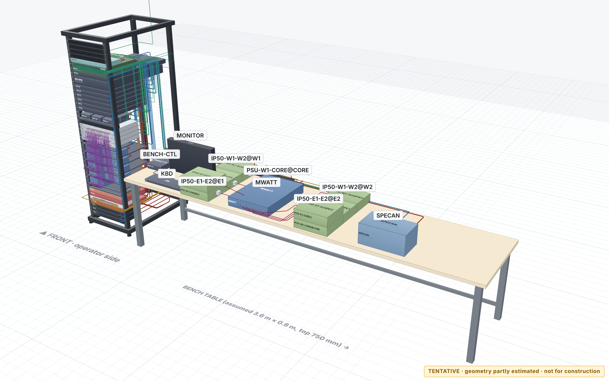
Contents
1 How to read this guide
Each step names the parts and cables by ID. The same IDs are printed in the tables, written on the cable tags, and searchable in the interactive twin.
Cable colours and ID scheme
| Class / colour | ID | What it carries | Cables | Typical part | Step |
|---|---|---|---|---|---|
| AC | A001… | AC mains | 38 | P004-006, P004-010 | 12 |
| DC | D001… | DC power | 16 | Belden 8461, bus link | 13 |
| POE | P001… | PoE (power only) to node ETH1 | 7 | STP6X1MBU | 14 |
| FIB | F001… | data to SW-DATA | 28 | FZ2ERLNLNSNM005, AXC763-10000S | 15 |
| ETH | E001… | management to SW-OOB | 29 | STP6X2MBU, STP6X3MBU | 16 |
| RF | R001… | IF coax (SMA) | 80 | CBL-2FT-SMSM+, CBL-3FT-SMSM+ | 19, 20, 21, 22, 23, 24, 25, 26, 27 |
| GNSS | G001… | GNSS coax | 8 | RG-316, LMR-400 | 17 |
| WG | W001… | IP-50 chain | 16 | PEWCA1003, CBL-3FT-SMSM+ | 28 |
| AUX | X001… | operator station (video, USB) | 2 | video cable, keyboard + mouse | 18 |
Cable IDs are a class letter and a number: A = AC, D = DC, P = PoE, F = data, E = management, R = IF coax, G = GNSS, W = IP-50 chain, X = operator station. Port IDs are DEVICE.PORT: ATT-01.ch1.in is attenuator ATT-01, channel 1 input; SB2.M1.T1 is Spider box SB2, module M1, tile 1.
Confidence of each item
estimate size or position estimated (photos, stand-in model). likely from the datasheet of the probable model. confirmed known part and size.
Rules for every step
- Tag both ends of every cable with its ID before you route it. Use the label printer cartridges in the parts list.
- Torque every SMA to 8 in-lb (0.9 N·m) with the SMA torque wrench. Finger-tight is not enough and more damages the connector.
- Rack units count from the bottom: U1 is the lowest unit. A device marked U33-U34 takes two units. The U numbers are printed on the front-left post in the pictures.
- Front is the operator side (Spider-box and attenuator SMA panels). Rear carries the PDU outlets, DC terminals and the node ETH / SFP ports. The words FRONT and REAR are painted on the floor in the pictures.
- Length is the stock length to fit; "route" is the length the twin measured along the cable path. Dress the slack in the cable manager.
- Terminate unused tile and coupler SMA ports with 50-ohm loads (ANNE-50+).
- Power stays off until the last step: PDUs unplugged, breakers and fuses OFF.
How the pictures work
- Each step picture shows the bench as it is after that step. Items fitted in this step are bright with an orange outline and an ID tag; items from earlier steps are pale; later items are not shown.
- Cables are drawn in their class colour along the route the twin planned. Small labels give the cable ID.
- Close-ups of the Spider boxes are straight on: module (M1-M4), sector (e.g. HUB.W) and tile (T1-T4) are labelled.
- Every picture carries the TENTATIVE mark: the scene is a planning model, not a construction drawing.
2 Overview
Rack front elevation

Read from the top. Every U is listed; consecutive blanking panels share a row. Rack: StarTech 4POSTRACK42, 42U, rail-to-rail depth 900 mm; U1 starts 120 mm above the floor.
| U | Device | Part |
|---|---|---|
| U39-U42 | blanking panels | AR8136BLK |
| U38 | GNSS-SPL | RMALDCBS1X8 |
| U37 | SW-DATA | Netgear M4350-24F4V |
| U36 | SW-OOB | Netgear M4250-26G4XF-PoE+ (GSM4230PX) |
| U35 | SRV-E2E | 1U rack server (lab) |
| U33-U34 | SRV-DPIR | 2U rack server (lab) |
| U32 | HOST-W1 | 1U rack server, 10G SFP+ NIC |
| U31 | HOST-W2 | 1U rack server, 10G SFP+ NIC |
| U30 | HOST-E1 | 1U rack server, 10G SFP+ NIC |
| U29 | HOST-E2 | 1U rack server, 10G SFP+ NIC |
| U28 | HOST-S | 1U rack server, 10G SFP+ NIC |
| U27 | HOST-N | 1U rack server, 10G SFP+ NIC |
| U25-U26 | AGENTS | mini PCs on a 1U shelf, 2U clearance |
| U24 | CM | Panduit NCMHF1 |
| U23 | SB1 | GTS003 · odd |
| U22 | SB2 | GTST002B · hybrid |
| U21 | SB3 | GTST003 · even/odd |
| U20 | SB4 | GTS003 · even |
| U19 | SPL-TRAY | 8 x 2-way splitters ZN2PD-02183-S+ |
| U17-U18 | ATT-SHELF-1 | 2U shelf, 2 programmable attenuator boxes (4 ch, dial) |
| U15-U16 | ATT-SHELF-2 | 2U shelf, 2 programmable attenuator boxes (4 ch, dial) |
| U13-U14 | ATT-SHELF-3 | 2U shelf, 2 programmable attenuator boxes (4 ch, dial) |
| U11-U12 | ATT-SHELF-4 | 2U shelf, 2 programmable attenuator boxes (4 ch, dial) |
| U9-U10 | ATT-SHELF-5 | 2U shelf, 1 programmable attenuator boxes (4 ch, dial) |
| U8 | PA-SHELF | Siklu EH-PoE-DC-Adaptor-10 + AC PoE injector on a shelf |
| U7 | DC-DIST | Eaton DCD1M |
| U6 | DC-RECT | Mean Well RCP-1UI + 2 x RCP-1000-48 |
| U5 | DC-DIST2 | Westell N250110-N-0803, GMT fuses |
| U4 | DC-RECT2 | RCP-1UI + RCP-1000-48, wired -48 V |
| U3 | PDU-A | Raritan PX3-5260R class (1U, 12 x C13, switched, 16 A) |
| U2 | PDU-B | Raritan PX3-5260R class (1U, 12 x C13, switched, 16 A) |
| U1 | PDU-C | Raritan PX3-5260R class (1U, 12 x C13, switched, 16 A) |
Rack rear

Most cabling happens at the rear: PDU outlets, DC terminals, the node power (ETH1), data (SFP+) and GNSS ports. Connectors that face the rear, per rack item (counting the parts on its shelf):
| U | Device | Rear connectors | Used |
|---|---|---|---|
| U38 | GNSS-SPL | 9 SMA, 1 C14 | 9 / 10 |
| U37 | SW-DATA | 1 C14 | 1 / 1 |
| U36 | SW-OOB | 26 RJ45, 4 SFP, 1 C14 | 30 / 31 |
| U35 | SRV-E2E | 1 SFP, 1 RJ45, 1 C14 | 3 / 3 |
| U33-U34 | SRV-DPIR | 1 SFP, 1 RJ45, 1 C14 | 3 / 3 |
| U32 | HOST-W1 | 1 SFP, 1 RJ45, 1 C14 | 3 / 3 |
| U31 | HOST-W2 | 1 SFP, 1 RJ45, 1 C14 | 3 / 3 |
| U30 | HOST-E1 | 1 SFP, 1 RJ45, 1 C14 | 3 / 3 |
| U29 | HOST-E2 | 1 SFP, 1 RJ45, 1 C14 | 3 / 3 |
| U28 | HOST-S | 1 SFP, 1 RJ45, 1 C14 | 3 / 3 |
| U27 | HOST-N | 1 SFP, 1 RJ45, 1 C14 | 3 / 3 |
| U25-U26 | AGENTS | 12 RJ45, 6 C5 | 18 / 18 |
| U23 | SB1 | 5 RJ45, 2 SFP, 2 SMA, 2 USB, 1 DC | 6 / 12 |
| U22 | SB2 | 3 RJ45, 1 SFP, 1 SMA, 1 USB, 1 DC | 2 / 7 |
| U21 | SB3 | 5 RJ45, 2 SFP, 2 SMA, 2 USB, 1 DC | 6 / 12 |
| U20 | SB4 | 5 RJ45, 2 SFP, 2 SMA, 2 USB, 1 DC | 6 / 12 |
| U17-U18 | ATT-SHELF-1 | 2 RJ45, 2 DC | 4 / 4 |
| U15-U16 | ATT-SHELF-2 | 2 RJ45, 2 DC | 4 / 4 |
| U13-U14 | ATT-SHELF-3 | 2 RJ45, 2 DC | 4 / 4 |
| U11-U12 | ATT-SHELF-4 | 2 RJ45, 2 DC | 4 / 4 |
| U9-U10 | ATT-SHELF-5 | 1 RJ45, 1 DC | 2 / 2 |
| U8 | PA-SHELF | 7 RJ45, 6 DC, 1 C6? | 14 / 14 |
| U7 | DC-DIST | 11 DC | 7 / 11 |
| U6 | DC-RECT | 1 C14, 1 DC | 2 / 2 |
| U4 | DC-RECT2 | 1 C14, 1 DC | 2 / 2 |
| U3 | PDU-A | 12 C13, 1 IEC60309 | 13 / 13 |
| U2 | PDU-B | 12 C13, 1 IEC60309 | 13 / 13 |
| U1 | PDU-C | 12 C13, 1 IEC60309 | 8 / 13 |
Bench table layout
Plan from above, to scale. Rear (wall side) at the top, operator side at the bottom. Numbers match the table. Dashed boxes stand on top of another device; pink squares are the waveguide transitions on the radio flanges. Assumed: one 3.6 m x 0.8 m bench table to the right of the rack, top at 750 mm (estimate).
Positions
| # | ID | What it is | Position (from the table's rack-side end / front edge) | W × D × H mm | Conf. |
|---|---|---|---|---|---|
| 1 | BENCH-CTL | bench controller: event script, ATT / PDU commands, logging (always on) | 20 mm from the rack-side end, 310 mm from the front edge | 180 × 180 × 55 | estimate |
| 2 | KBD | keyboard + mouse | 220 mm from the rack-side end, 60 mm from the front edge | 440 × 140 × 25 | estimate |
| 3 | MONITOR | 24-inch monitor (operator station) | 240 mm from the rack-side end, 390 mm from the front edge | 540 × 60 × 330 | estimate |
| 4 | IP50-W1-CORE@W1 | IP-50, hop W1-CORE at W1 | 700 mm from the rack-side end, 20 mm from the front edge | 322 × 270 × 86 | estimate |
| 5 | IP50-E1-E2@E1 | IP-50, hop E1-E2 at E1 | 700 mm from the rack-side end, 20 mm from the front edge | 322 × 270 × 86 | estimate |
| 6 | IP50-CORE-E1@CORE | IP-50, hop CORE-E1 at CORE | 700 mm from the rack-side end, 270 mm from the front edge | 322 × 270 × 86 | estimate |
| 7 | IP50-W1-W2@W1 | IP-50, hop W1-W2 at W1 | 700 mm from the rack-side end, 520 mm from the front edge | 322 × 270 × 86 | estimate |
| 8 | TABLE-STRIP | bench mains strip, C13 | 980 mm from the rack-side end, 730 mm from the front edge | 485 × 44 × 44 | estimate |
| 9 | MWATT | Keysight J7204B, 4 ch | 1220 mm from the rack-side end, 60 mm from the front edge | 426 × 578 × 88 | likely |
| 10 | PSU-W1-CORE@CORE | 48 V supply, switched at t0 | 1220 mm from the rack-side end, 690 mm from the front edge | 167 × 67 × 35 | estimate |
| 11 | PSU-CORE-E1@CORE | 48 V supply, switched at t0 | 1410 mm from the rack-side end, 690 mm from the front edge | 167 × 67 × 35 | estimate |
| 12 | IP50-W1-CORE@CORE | IP-50, hop W1-CORE at CORE | 1936 mm from the rack-side end, 20 mm from the front edge | 322 × 270 × 86 | estimate |
| 13 | IP50-E1-E2@E2 | IP-50, hop E1-E2 at E2 | 1936 mm from the rack-side end, 20 mm from the front edge | 322 × 270 × 86 | estimate |
| 14 | IP50-CORE-E1@E1 | IP-50, hop CORE-E1 at E1 | 1936 mm from the rack-side end, 270 mm from the front edge | 322 × 270 × 86 | estimate |
| 15 | IP50-W1-W2@W2 | IP-50, hop W1-W2 at W2 | 1936 mm from the rack-side end, 520 mm from the front edge | 322 × 270 × 86 | estimate |
| 16 | SPECAN | spectrum analyser / power sensor | 2520 mm from the rack-side end, 60 mm from the front edge | 408 × 235 × 186 | likely |
| 17 | WGT-W1-CORE-A | Pasternack PEWCA1003 WR-62 to SMA-F (33.3 mm flange); band to confirm | on IP50-W1-CORE@W1 (on its waveguide flange) | 33 × 35 × 33 | estimate |
| 18 | WGT-E1-E2-A | Pasternack PEWCA1003 WR-62 to SMA-F (33.3 mm flange); band to confirm | on IP50-E1-E2@E1 (on its waveguide flange) | 33 × 35 × 33 | estimate |
| 19 | WGT-CORE-E1-A | Pasternack PEWCA1003 WR-62 to SMA-F (33.3 mm flange); band to confirm | on IP50-CORE-E1@CORE (on its waveguide flange) | 33 × 35 × 33 | estimate |
| 20 | WGT-W1-W2-A | Pasternack PEWCA1003 WR-62 to SMA-F (33.3 mm flange); band to confirm | on IP50-W1-W2@W1 (on its waveguide flange) | 33 × 35 × 33 | estimate |
| 21 | WGT-W1-CORE-B | Pasternack PEWCA1003 WR-62 to SMA-F (33.3 mm flange); band to confirm | on IP50-W1-CORE@CORE (on its waveguide flange) | 33 × 35 × 33 | estimate |
| 22 | WGT-E1-E2-B | Pasternack PEWCA1003 WR-62 to SMA-F (33.3 mm flange); band to confirm | on IP50-E1-E2@E2 (on its waveguide flange) | 33 × 35 × 33 | estimate |
| 23 | WGT-CORE-E1-B | Pasternack PEWCA1003 WR-62 to SMA-F (33.3 mm flange); band to confirm | on IP50-CORE-E1@E1 (on its waveguide flange) | 33 × 35 × 33 | estimate |
| 24 | WGT-W1-W2-B | Pasternack PEWCA1003 WR-62 to SMA-F (33.3 mm flange); band to confirm | on IP50-W1-W2@W2 (on its waveguide flange) | 33 × 35 × 33 | estimate |
Bench table, 3D view

3 Bill of materials
From poc1_parts_list.csv. Quantities include spares where noted. "Status" is how sure the part is; check every "to confirm" line before ordering.
| # | Group | Item | Part number | Maker | Qty | Use | Status |
|---|---|---|---|---|---|---|---|
| 1 | Radios | 1U Spider box, 2 x N367 node x 2 sectors | GTS003 (lab label) | Siklu | 2 | 4 sector modules FATJ0498, 16 SMA tile ports | on hand; to confirm |
| 2 | Radios | 1U Spider box, 1 x N367 node x 4 sectors (hub) | GTST002B (lab label) | Siklu | 1 | 16 SMA tile ports | on hand; to confirm |
| 3 | Radios | 1U Spider box, 2 x N367 node x 2 sectors (assumed) | GTST003 (lab label) | Siklu | 1 | 16 SMA tile ports | on hand; to confirm |
| 4 | Radios | '6*4 sector nodes - GTSTU022\23' | GTSTU022 / GTSTU023 | Siklu | ? | not identified (TU boxes?); not used here | to confirm with the lab |
| 5 | Radios | N367 node (inside the Spider boxes) | MultiHaul TG N367 (MH-N367-CCP-PoE-MWB class) | Siklu | 7 | ETH1 power in, SFP+ 10G data; managed in-band; 48 W with PoE-Out off | datasheet |
| 6 | Radios | IP-50CX compact dual-carrier radio (1/10/25GbE ports) | Ceragon IP-50CX (band TBC) | Ceragon | 8 | 4 conducted hops, -48 V; data on a 10GbE port | on hand (8); band to confirm |
| 7 | Power | DC/PoE adaptor, passive, bag of 10 ('DC\POE for falcon') | EH-PoE-DC-Adaptor-10 | Siklu | 1 bag (6 wired, 4 spare unwired) | 36-57 V DC in, RJ-45 to node ETH1 (power only) | likely |
| 8 | Power | DC drawer: rectifier shelf 1U + 2 x 1 kW 48 V modules | RCP-1UI + 2 x RCP-1000-48 | Mean Well | 1 | 48 V bus, 288 W for 6 nodes | likely (shelf) / confirmed (modules) |
| 9 | Power | DC drawer: distribution, 10 breakers | DCD1M (suffix TBC) | Eaton | 1 | one breaker per adaptor; CB7-10 spare, OFF | likely |
| 10 | Power | AC PoE injector 60 W, 10G (powers a node that is switched off at t0) | AX-IN-10G-60W-AC-PoE-xx (plug per region) | Siklu | 1 | HUB on a switched PDU outlet; 52 W to the node, AC inlet TBC | likely |
| 11 | Power | -48 V rectifier for the IP-50 radios | RCP-1UI + RCP-1000-48 wired -48 V | Mean Well | 1 | 6 radios x ~58 W (IP-50E figure; recheck for the model) | likely |
| 12 | Power | -48 V fuse panel 1U, 2 buses x 5 GMT positions | N250110-N-0803 | Westell | 1 | one fused output per surviving IP-50 radio | to confirm |
| 13 | Power | GMT fuse for the -48 V panel | GMT 3 A (rating to confirm) | Bussmann / Littelfuse | 8 | 6 + 2 spare | to confirm |
| 14 | Power | Isolated 48 V AC/DC supply >= 100 W, wired -48 V (positive grounded) | part TBC | - | 2 | one per IP-50 radio switched off at t0, on a switched PDU outlet | to confirm |
| 15 | Power | Rack PDU 1U, 16 A, 12 x C13, switched per outlet | Raritan PX3-5260R class | Raritan (or equal) | 3 | IEC 60309 16 A inlet; PDU-C O3, PDU-C O4, PDU-C O5, PDU-C O6, PDU-C O7 switched off at t0 | to confirm (user: 1U PDU) |
| 16 | Power | Bench-table mains strip, C13 outlets | lab-supplied (part TBC) | - | 1 | 4 table loads | to confirm |
| 17 | Power | 'Micky' lead C14 -> C5 1.83 m | P014-006 | Eaton Tripp Lite | 4 | PoE injector (inlet TBC), agent-PC bricks | confirmed |
| 18 | Power | 'Micky' lead C14 -> C5 3.05 m | P014-010 | Eaton Tripp Lite | 3 | agent-PC bricks | likely |
| 19 | Power | 'Exten' lead C14 -> C13 1.83 m | P004-006 | Eaton Tripp Lite | 16 | rack and table devices, traffic hosts | confirmed |
| 20 | Power | 'Exten' lead C14 -> C13 3.05 m | P004-010 | Eaton Tripp Lite | 9 | rack and table devices, servers, traffic hosts | confirmed |
| 21 | Power | 'Exten' lead C14 -> C13 4.57 m | P004-015 | Eaton Tripp Lite | 3 | servers, switched supplies | likely |
| 22 | Power | DC cable 2 x 18 AWG (bulk) + ferrules | Belden 8461 + Phoenix 3200519 | Belden / Phoenix | 30 m + 56 ferrules | 14 runs; 100 ft spool = 30.5 m | confirmed |
| 23 | Power | DC bus link 2 x 10 AWG with ring lugs (cut to length) | part TBC | - | 2 | rectifier to distribution, 1.75 m in all | to confirm |
| 24 | Network | Data switch, 24 x SFP+ + 4 x SFP28, L3 | M4350-24F4V (XSM4328FV) | Netgear | 1 | 28 of 28 ports; 1G only on P1-16 | confirmed |
| 25 | Network | Management switch, 24 x 1G PoE+ + 2 x 1G + 4 x SFP+ | M4250-26G4XF-PoE+ (GSM4230PX) | Netgear | 1 | 29 ports: 26 of 26 RJ-45 + 3 SFP+ cage | confirmed |
| 26 | Network | 1000BASE-T copper SFP | AGM734-10000S | Netgear | 9 | 6 on SW-DATA P1-16, 3 on SW-OOB | confirmed; switch compatibility to confirm |
| 27 | Network | SFP+ SR optics: node side / host side / switch side | AX-SFP+10G-MM / host NIC optic / AXM761-10000S | Siklu / - / Netgear | 6 / 8 / 14 | both ends of every OM4 run | likely / to confirm / confirmed |
| 28 | Network | OM4 LC-LC duplex 2 m | FZ2ERLNLNSNM002 | Panduit | 4 | confirmed | |
| 29 | Network | OM4 LC-LC duplex 3 m | FZ2ERLNLNSNM003 | Panduit | 2 | likely | |
| 30 | Network | OM4 LC-LC duplex 5 m | FZ2ERLNLNSNM005 | Panduit | 8 | likely | |
| 31 | Network | SFP+ DAC 3 m | AXC763-10000S | Netgear | 8 | confirmed | |
| 32 | Network | Cat6A S/FTP patch 1 m | STP6X1MBU | Panduit | 14 | confirmed | |
| 33 | Network | Cat6A S/FTP patch 2 m | STP6X2MBU | Panduit | 16 | confirmed | |
| 34 | Network | Cat6A S/FTP patch 3 m | STP6X3MBU | Panduit | 10 | confirmed | |
| 35 | Network | Cat6A S/FTP patch 5 m | STP6X5MBU | Panduit | 1 | likely | |
| 36 | Network | Cat6A S/FTP patch 7 m | STP6X7MBU | Panduit | 1 | likely | |
| 37 | RF/IF | Programmable attenuator box, 4 ch, 0-63 dB, to 18 GHz (small box with a dial; e.g. ZTDAT-4-18G63S class) | ZTDAT-4-18G63S class (model TBC) | Mini-Circuits (or equal) | 9 | 5 x 2U shelves | to buy: 9 |
| 38 | RF/IF | 2-way splitter 2-18 GHz | ZN2PD-02183-S+ | Mini-Circuits | 8 | one per tile of each shared hub module | confirmed |
| 39 | RF/IF | SMA test cable 18 GHz 0.30 m | CBL-1FT-SMSM+ | Mini-Circuits | 12 | IF chain, length from the rack span | confirmed |
| 40 | RF/IF | SMA test cable 18 GHz 0.61 m ('RF cable': 10 on hand, type TBC) | CBL-2FT-SMSM+ | Mini-Circuits | 38 | IF chain, length from the rack span | confirmed |
| 41 | RF/IF | SMA test cable 18 GHz 0.91 m | CBL-3FT-SMSM+ | Mini-Circuits | 27 | IF chain, length from the rack span | confirmed |
| 42 | RF/IF | SMA test cable 18 GHz 1.00 m | CBL-1M-SMSM+ | Mini-Circuits | 9 | IF chain, length from the rack span; IP-50 chains | confirmed |
| 43 | RF/IF | SMA test cable 18 GHz 2.00 m | CBL-2M-SMSM+ | Mini-Circuits | 2 | IF chain, length from the rack span | confirmed |
| 44 | RF/IF | 50-ohm SMA load | ANNE-50+ | Mini-Circuits | as needed | unused tile and coupler ports | confirmed |
| 45 | RF/IF | SMA torque wrench 8 in-lb | ST-SMA3 | Fairview | 2 | confirmed | |
| 46 | IP-50 chain | Waveguide-to-coax transition, WR-62 12.4-18 GHz (<=18 GHz set) | PEWCA1003 | Pasternack | 8 | band and flange mating TBC | likely |
| 47 | IP-50 chain | 30 dB 10 W pad DC-18 GHz (<=18 GHz set) | SA18S10W-30 | Fairview | 8 | one at each radio port, on the transition | confirmed |
| 48 | IP-50 chain | Programmable attenuator 4 ch DC-18 GHz (<=18 GHz set) | J7204B opt 002 | Keysight | 1 | 4 channels used; LAN to SW-OOB | confirmed |
| 49 | IP-50 chain | Alternative set if the band is 18-26.5 GHz (replaces the 3 lines above) | PEWCA1018 + FMAT4009-30 + 84906K/84904K/11713C | Pasternack / Fairview / Keysight | replaces the set | 2.92 mm pads and cables | alternative |
| 50 | Timing | GNSS antenna + 1x8 splitter | 101898-00 + RMALDCBS1X8 | Protempis / GPS Networking | 1 + 1 | only if the boxes take GNSS (N367 GPS is internal) | to confirm |
| 51 | Timing | GNSS coax: antenna lead + surge arrestor / splitter jumpers | LMR-400 + arrestor / RG-316 SMA 1 m | part TBC | 1 / 7 | only if the boxes take GNSS | to confirm |
| 52 | Compute | MARL agent PC (mini PC, 2 x 1G NICs) | lab PC | - | 6 | on hand | |
| 53 | Compute | Traffic host, 1U rack server (10G SFP+ NIC, iperf3/TRex) | lab server | - | 6 | in the rack, with its rails | on hand; to confirm |
| 54 | Compute | Rack servers: SRV-E2E (1U); SRV-DPIR (2U) | lab servers | - | 2 | in the rack, with their rails | on hand; to confirm |
| 55 | Compute | Bench controller PC + monitor + keyboard/mouse (operator station on the table) | lab PC | - | 1 + 1 + 1 | stays powered through the event; drives PDUs and attenuators over SW-OOB | on hand; to confirm |
| 56 | Compute | Video cable (DisplayPort / HDMI) 1.8 m | part TBC | - | 1 | PC to monitor | to confirm |
| 57 | Rack | 19-inch 4-post rack (38U used of 42U) | StarTech 4POSTRACK42 | StarTech | 1 | rail type (square hole?) to confirm | confirmed |
| 58 | Rack | 1U vented shelf | CABSHELFV1U | StarTech | 8 | adaptors, tray, agent PCs, attenuator boxes | likely |
| 59 | Rack | Cable manager / blanking panels (pack of 10) / labels | NCMHF1 / AR8136BLK / Brady M21-750-427 | various | 1 / 1 / 3 | 4 empty U | confirmed; rail type to confirm |
| 60 | Test | 18 GHz power sensor / spectrum analyser | NRP18S / FPL1026 | R&S | 1 / 1 | port checks, calibration | confirmed |
| 61 | Test | N-F to SMA-F adapter for the power sensor | NF-SF50+ | Mini-Circuits | 1 | NRP18S input is N-male | confirmed |
4 Installation steps
Follow the steps in order. Each step starts on a new page: the picture shows the bench after the step, the tables list what to fit or connect.
| Step | Title | Kind | View | Items |
|---|---|---|---|---|
| 1 | Assemble the rack | rack | front | - |
| 2 | Mount the PDUs | devices | rear | 3 items |
| 3 | Mount the DC drawers | devices | front | 4 items |
| 4 | Adaptor shelf | devices | rear | 12 items |
| 5 | Programmable attenuators | devices | front | 14 items |
| 6 | Splitter / coupler tray | devices | front | 9 items |
| 7 | Spider boxes | devices | front | 4 items |
| 8 | Servers and traffic hosts | devices | front | 8 items |
| 9 | Switches, cable manager, shelves | devices | front | 11 items |
| 10 | Blanking panels | devices | front | 4 items |
| 11 | Bench table | devices | table | 24 items |
| 12 | Cable: AC mains | cables | rear | 38 cables |
| 13 | Cable: DC power | cables | rear | 16 cables |
| 14 | Cable: PoE to the nodes | cables | rear | 7 cables |
| 15 | Cable: Data to SW-DATA | cables | rear | 28 cables |
| 16 | Cable: Management to SW-OOB | cables | rear | 29 cables |
| 17 | Cable: GNSS | cables | rear | 8 cables |
| 18 | Cable: Operator station | cables | table | 2 cables |
| 19 | IF link HUB-W1 (ATT-01) | IF link | front | 12 cables |
| 20 | IF link HUB-W2 (ATT-02) | IF link | front | 8 cables |
| 21 | IF link HUB-E1 (ATT-03) | IF link | front | 12 cables |
| 22 | IF link HUB-E2 (ATT-04) | IF link | front | 8 cables |
| 23 | IF link HUB-S (ATT-05) | IF link | front | 8 cables |
| 24 | IF link HUB-N (ATT-06) | IF link | front | 8 cables |
| 25 | IF link E2-W2 (ATT-07) | IF link | front | 8 cables |
| 26 | IF link E1-N (ATT-08) | IF link | front | 8 cables |
| 27 | IF link W1-S (ATT-09) | IF link | front | 8 cables |
| 28 | IP-50 conducted chains | IP-50 chains | table | 16 cables |
| 29 | Checks and power-up | checks | iso | - |
Assemble the rack

Rack facts
| Item | Value |
|---|---|
| Rack | StarTech 4POSTRACK42 |
| Units | 42U, 38U used; U1 is the lowest unit |
| Rail-to-rail depth | 900 mm (deepest device 823 mm) |
| Frame width | 600 mm; 19-inch panel 482.6 mm |
| U1 height | 120 mm above the floor (bottom of U1) |
| Assumed | StarTech 4POSTRACK42 (rails adjustable 559-1016 mm, square holes, M6 cage nuts); rail-to-rail depth set to 900 mm so 800 mm-class rack servers fit |
| Assumed | U1 bottom 120 mm above the floor (on castors, estimate) |
Mount the PDUs

Fit these 3 items
| ID | What it is / part | Where | Mounting notes | Conf. |
|---|---|---|---|---|
| PDU-A | PDU-A 16 A, 12 x C13, switched Raritan PX3-5260R class (1U, 12 x C13, switched, 16 A) | U3 · 483 × 44 mm face, 183 mm deep | 1U switched PDU, 12 x C13, 16 A (Raritan PX3-5260R class, 183 mm); outlets on the rear assumed connectors front: 1 RJ45; rear: 12 C13, 1 IEC60309 | estimate |
| PDU-B | PDU-B 16 A, 12 x C13, switched Raritan PX3-5260R class (1U, 12 x C13, switched, 16 A) | U2 · 483 × 44 mm face, 183 mm deep | 1U switched PDU, 12 x C13, 16 A (Raritan PX3-5260R class, 183 mm); outlets on the rear assumed connectors front: 1 RJ45; rear: 12 C13, 1 IEC60309 | estimate |
| PDU-C | PDU-C 16 A, 12 x C13, switched Raritan PX3-5260R class (1U, 12 x C13, switched, 16 A) | U1 · 483 × 44 mm face, 183 mm deep | 1U switched PDU, 12 x C13, 16 A (Raritan PX3-5260R class, 183 mm); outlets on the rear assumed connectors front: 1 RJ45; rear: 12 C13, 1 IEC60309 | estimate |
Mount the DC drawers
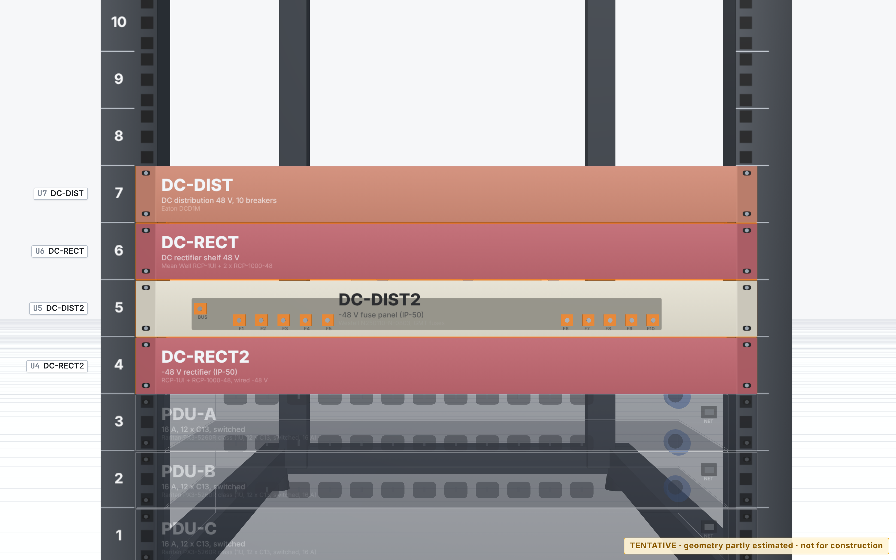
Fit these 4 items
| ID | What it is / part | Where | Mounting notes | Conf. |
|---|---|---|---|---|
| DC-DIST | DC distribution 48 V, 10 breakers Eaton DCD1M | U7 · 483 × 44 mm face, 280 mm deep | Eaton DCD1M (~280 mm): breakers front; load terminal face to confirm (rear assumed) connectors rear: 11 DC | estimate |
| DC-RECT | DC rectifier shelf 48 V Mean Well RCP-1UI + 2 x RCP-1000-48 | U6 · 483 × 44 mm face, 351 mm deep | Mean Well RCP-1UI (350.8 mm): 3 C14 inlets and the DC bus at the rear connectors rear: 1 C14, 1 DC | likely |
| DC-DIST2 | -48 V fuse panel (IP-50) Westell N250110-N-0803, GMT fuses | U5 · 483 × 44 mm face, 148 mm deep | Westell N250110-N-0803 (147.8 mm, vendor TP): all terminals and GMT fuses on the FRONT connectors front: 11 DC | likely |
| DC-RECT2 | -48 V rectifier (IP-50) RCP-1UI + RCP-1000-48, wired -48 V | U4 · 483 × 44 mm face, 351 mm deep | Mean Well RCP-1UI (350.8 mm): 3 C14 inlets and the DC bus at the rear connectors rear: 1 C14, 1 DC | likely |
Adaptor shelf
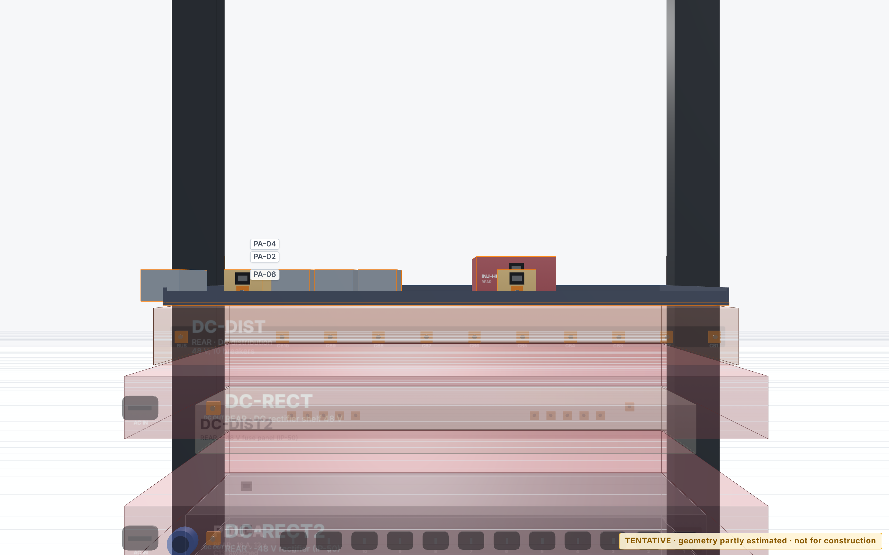
Fit these 12 items
| ID | What it is / part | Where | Mounting notes | Conf. |
|---|---|---|---|---|
| PA-SHELF | DC/PoE adaptors PA-01..PA-10 + INJ-HUB Siklu EH-PoE-DC-Adaptor-10 + AC PoE injector on a shelf | U8 · 483 × 44 mm face, 254 mm deep | 1U vented shelf StarTech CABSHELFV1U (254 mm) carries 11: PA-01, PA-02, PA-03, PA-04, PA-05, PA-06, INJ-HUB, PA-07, PA-08, PA-09, PA-10 | likely |
| PA-01 | DC/PoE adaptor Siklu EH-PoE-DC-Adaptor (size estimate) | on PA-SHELF (U8): 171 mm from the left ear, 154 mm behind the front rail | Siklu EH-PoE-DC-Adaptor (size estimate) connectors rear: 1 RJ45, 1 DC | estimate |
| PA-02 | DC/PoE adaptor Siklu EH-PoE-DC-Adaptor (size estimate) | on PA-SHELF (U8): 385 mm from the left ear, 154 mm behind the front rail | Siklu EH-PoE-DC-Adaptor (size estimate) connectors rear: 1 RJ45, 1 DC | estimate |
| PA-03 | DC/PoE adaptor Siklu EH-PoE-DC-Adaptor (size estimate) | on PA-SHELF (U8): 171 mm from the left ear, 154 mm behind the front rail | Siklu EH-PoE-DC-Adaptor (size estimate) connectors rear: 1 RJ45, 1 DC | estimate |
| PA-04 | DC/PoE adaptor Siklu EH-PoE-DC-Adaptor (size estimate) | on PA-SHELF (U8): 385 mm from the left ear, 154 mm behind the front rail | Siklu EH-PoE-DC-Adaptor (size estimate) connectors rear: 1 RJ45, 1 DC | estimate |
| PA-05 | DC/PoE adaptor Siklu EH-PoE-DC-Adaptor (size estimate) | on PA-SHELF (U8): 171 mm from the left ear, 154 mm behind the front rail | Siklu EH-PoE-DC-Adaptor (size estimate) connectors rear: 1 RJ45, 1 DC | estimate |
| PA-06 | DC/PoE adaptor Siklu EH-PoE-DC-Adaptor (size estimate) | on PA-SHELF (U8): 385 mm from the left ear, 154 mm behind the front rail | Siklu EH-PoE-DC-Adaptor (size estimate) connectors rear: 1 RJ45, 1 DC | estimate |
| INJ-HUB | PoE injector Siklu AX-IN-10G-60W-AC-PoE 138.5 x 62.5 x 35.3 mm, C6 inlet | on PA-SHELF (U8): 155 mm from the left ear, 104 mm behind the front rail | Siklu AX-IN-10G-60W-AC-PoE 138.5 x 62.5 x 35.3 mm, C6 inlet connectors rear: 1 RJ45, 1 C6? switched OFF at t0 | estimate |
| PA-07 | DC/PoE adaptor Siklu EH-PoE-DC-Adaptor (size estimate) (spare, unwired) | on PA-SHELF (U8): 280 mm from the left ear, 154 mm behind the front rail | Siklu EH-PoE-DC-Adaptor (size estimate) | estimate |
| PA-08 | DC/PoE adaptor Siklu EH-PoE-DC-Adaptor (size estimate) (spare, unwired) | on PA-SHELF (U8): 314 mm from the left ear, 154 mm behind the front rail | Siklu EH-PoE-DC-Adaptor (size estimate) | estimate |
| PA-09 | DC/PoE adaptor Siklu EH-PoE-DC-Adaptor (size estimate) (spare, unwired) | on PA-SHELF (U8): 348 mm from the left ear, 154 mm behind the front rail | Siklu EH-PoE-DC-Adaptor (size estimate) | estimate |
| PA-10 | DC/PoE adaptor Siklu EH-PoE-DC-Adaptor (size estimate) (spare, unwired) | on PA-SHELF (U8): 450 mm from the left ear, 154 mm behind the front rail | Siklu EH-PoE-DC-Adaptor (size estimate) | estimate |
Programmable attenuators

Fit these 14 items
| ID | What it is / part | Where | Mounting notes | Conf. |
|---|---|---|---|---|
| ATT-SHELF-1 | Attenuators ATT-01 (HUB-W1) + ATT-02 (HUB-W2) 2U shelf, 2 programmable attenuator boxes (4 ch, dial) | U17-U18 · 483 × 88 mm face, 450 mm deep | 2U of rack space with a 1U vented shelf carrying two attenuator boxes carries 2: ATT-01, ATT-02 | estimate |
| ATT-SHELF-2 | Attenuators ATT-03 (HUB-E1) + ATT-04 (HUB-E2) 2U shelf, 2 programmable attenuator boxes (4 ch, dial) | U15-U16 · 483 × 88 mm face, 450 mm deep | 2U of rack space with a 1U vented shelf carrying two attenuator boxes carries 2: ATT-03, ATT-04 | estimate |
| ATT-SHELF-3 | Attenuators ATT-05 (HUB-S) + ATT-06 (HUB-N) 2U shelf, 2 programmable attenuator boxes (4 ch, dial) | U13-U14 · 483 × 88 mm face, 450 mm deep | 2U of rack space with a 1U vented shelf carrying two attenuator boxes carries 2: ATT-05, ATT-06 | estimate |
| ATT-SHELF-4 | Attenuators ATT-07 (E2-W2) + ATT-08 (E1-N) 2U shelf, 2 programmable attenuator boxes (4 ch, dial) | U11-U12 · 483 × 88 mm face, 450 mm deep | 2U of rack space with a 1U vented shelf carrying two attenuator boxes carries 2: ATT-07, ATT-08 | estimate |
| ATT-SHELF-5 | Attenuators ATT-09 (W1-S) 2U shelf, 1 programmable attenuator boxes (4 ch, dial) | U9-U10 · 483 × 88 mm face, 450 mm deep | 2U of rack space with a 1U vented shelf carrying two attenuator boxes carries 1: ATT-09 | estimate |
| ATT-01 | programmable attenuator programmable attenuator box, 4 ch (link HUB-W1) | on ATT-SHELF-1 (U17-U18): 25 mm from the left ear, 8 mm behind the front rail | programmable attenuator: small 4-channel box with a dial (user), 200 x 70 x 160 mm assumed, SMA on the front connectors front: 8 SMA; rear: 1 RJ45, 1 DC | estimate |
| ATT-02 | programmable attenuator programmable attenuator box, 4 ch (link HUB-W2) | on ATT-SHELF-1 (U17-U18): 260 mm from the left ear, 8 mm behind the front rail | programmable attenuator: small 4-channel box with a dial (user), 200 x 70 x 160 mm assumed, SMA on the front connectors front: 8 SMA; rear: 1 RJ45, 1 DC | estimate |
| ATT-03 | programmable attenuator programmable attenuator box, 4 ch (link HUB-E1) | on ATT-SHELF-2 (U15-U16): 25 mm from the left ear, 8 mm behind the front rail | programmable attenuator: small 4-channel box with a dial (user), 200 x 70 x 160 mm assumed, SMA on the front connectors front: 8 SMA; rear: 1 RJ45, 1 DC | estimate |
| ATT-04 | programmable attenuator programmable attenuator box, 4 ch (link HUB-E2) | on ATT-SHELF-2 (U15-U16): 260 mm from the left ear, 8 mm behind the front rail | programmable attenuator: small 4-channel box with a dial (user), 200 x 70 x 160 mm assumed, SMA on the front connectors front: 8 SMA; rear: 1 RJ45, 1 DC | estimate |
| ATT-05 | programmable attenuator programmable attenuator box, 4 ch (link HUB-S) | on ATT-SHELF-3 (U13-U14): 25 mm from the left ear, 8 mm behind the front rail | programmable attenuator: small 4-channel box with a dial (user), 200 x 70 x 160 mm assumed, SMA on the front connectors front: 8 SMA; rear: 1 RJ45, 1 DC | estimate |
| ATT-06 | programmable attenuator programmable attenuator box, 4 ch (link HUB-N) | on ATT-SHELF-3 (U13-U14): 260 mm from the left ear, 8 mm behind the front rail | programmable attenuator: small 4-channel box with a dial (user), 200 x 70 x 160 mm assumed, SMA on the front connectors front: 8 SMA; rear: 1 RJ45, 1 DC | estimate |
| ATT-07 | programmable attenuator programmable attenuator box, 4 ch (link E2-W2) | on ATT-SHELF-4 (U11-U12): 25 mm from the left ear, 8 mm behind the front rail | programmable attenuator: small 4-channel box with a dial (user), 200 x 70 x 160 mm assumed, SMA on the front connectors front: 8 SMA; rear: 1 RJ45, 1 DC | estimate |
| ATT-08 | programmable attenuator programmable attenuator box, 4 ch (link E1-N) | on ATT-SHELF-4 (U11-U12): 260 mm from the left ear, 8 mm behind the front rail | programmable attenuator: small 4-channel box with a dial (user), 200 x 70 x 160 mm assumed, SMA on the front connectors front: 8 SMA; rear: 1 RJ45, 1 DC | estimate |
| ATT-09 | programmable attenuator programmable attenuator box, 4 ch (link W1-S) | on ATT-SHELF-5 (U9-U10): 25 mm from the left ear, 8 mm behind the front rail | programmable attenuator: small 4-channel box with a dial (user), 200 x 70 x 160 mm assumed, SMA on the front connectors front: 8 SMA; rear: 1 RJ45, 1 DC | estimate |
Splitter / coupler tray
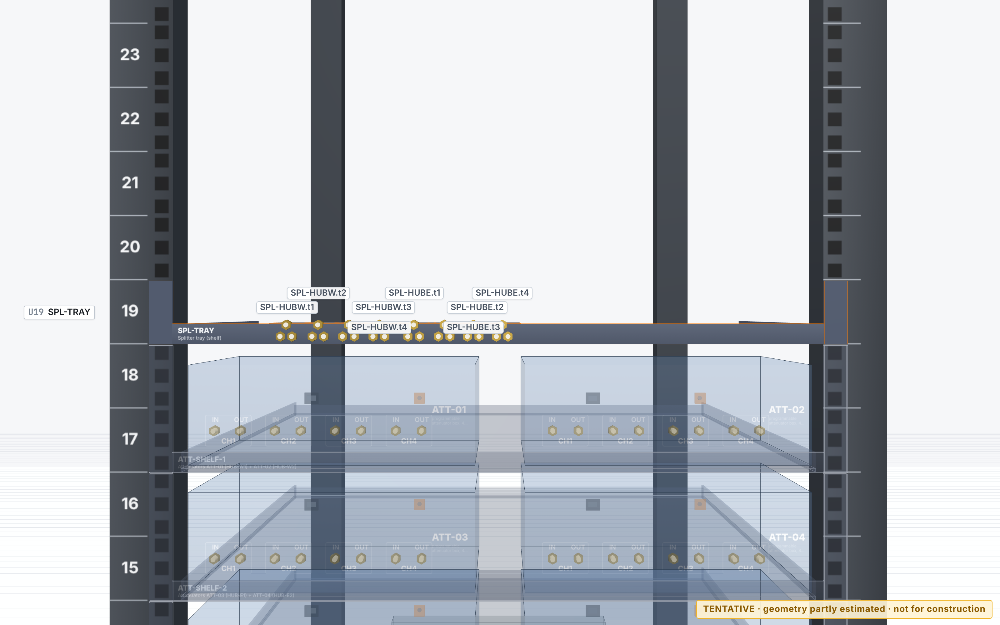
Fit these 9 items
| ID | What it is / part | Where | Mounting notes | Conf. |
|---|---|---|---|---|
| SPL-TRAY | Splitter tray (shelf) 8 x 2-way splitters ZN2PD-02183-S+ | U19 · 483 × 44 mm face, 254 mm deep | 1U vented shelf StarTech CABSHELFV1U (254 mm) carrying splitters / couplers carries 8: SPL-HUBW.t1, SPL-HUBW.t2, SPL-HUBW.t3, SPL-HUBW.t4, SPL-HUBE.t1, SPL-HUBE.t2, SPL-HUBE.t3, SPL-HUBE.t4 | likely |
| SPL-HUBW.t1 | RF splitter Mini-Circuits ZN2PD-02183-S+ 51.9 x 25.4 x 10.4 mm (blue), S / 1 / 2 SMA-F | on SPL-TRAY (U19): 82 mm from the left ear, 4 mm behind the front rail | Mini-Circuits ZN2PD-02183-S+ 51.9 x 25.4 x 10.4 mm (blue), S / 1 / 2 SMA-F connectors front: 3 SMA | estimate |
| SPL-HUBW.t2 | RF splitter Mini-Circuits ZN2PD-02183-S+ 51.9 x 25.4 x 10.4 mm (blue), S / 1 / 2 SMA-F | on SPL-TRAY (U19): 104 mm from the left ear, 4 mm behind the front rail | Mini-Circuits ZN2PD-02183-S+ 51.9 x 25.4 x 10.4 mm (blue), S / 1 / 2 SMA-F connectors front: 3 SMA | estimate |
| SPL-HUBW.t3 | RF splitter Mini-Circuits ZN2PD-02183-S+ 51.9 x 25.4 x 10.4 mm (blue), S / 1 / 2 SMA-F | on SPL-TRAY (U19): 125 mm from the left ear, 4 mm behind the front rail | Mini-Circuits ZN2PD-02183-S+ 51.9 x 25.4 x 10.4 mm (blue), S / 1 / 2 SMA-F connectors front: 3 SMA | estimate |
| SPL-HUBW.t4 | RF splitter Mini-Circuits ZN2PD-02183-S+ 51.9 x 25.4 x 10.4 mm (blue), S / 1 / 2 SMA-F | on SPL-TRAY (U19): 146 mm from the left ear, 4 mm behind the front rail | Mini-Circuits ZN2PD-02183-S+ 51.9 x 25.4 x 10.4 mm (blue), S / 1 / 2 SMA-F connectors front: 3 SMA | estimate |
| SPL-HUBE.t1 | RF splitter Mini-Circuits ZN2PD-02183-S+ 51.9 x 25.4 x 10.4 mm (blue), S / 1 / 2 SMA-F | on SPL-TRAY (U19): 170 mm from the left ear, 4 mm behind the front rail | Mini-Circuits ZN2PD-02183-S+ 51.9 x 25.4 x 10.4 mm (blue), S / 1 / 2 SMA-F connectors front: 3 SMA | estimate |
| SPL-HUBE.t2 | RF splitter Mini-Circuits ZN2PD-02183-S+ 51.9 x 25.4 x 10.4 mm (blue), S / 1 / 2 SMA-F | on SPL-TRAY (U19): 191 mm from the left ear, 4 mm behind the front rail | Mini-Circuits ZN2PD-02183-S+ 51.9 x 25.4 x 10.4 mm (blue), S / 1 / 2 SMA-F connectors front: 3 SMA | estimate |
| SPL-HUBE.t3 | RF splitter Mini-Circuits ZN2PD-02183-S+ 51.9 x 25.4 x 10.4 mm (blue), S / 1 / 2 SMA-F | on SPL-TRAY (U19): 211 mm from the left ear, 4 mm behind the front rail | Mini-Circuits ZN2PD-02183-S+ 51.9 x 25.4 x 10.4 mm (blue), S / 1 / 2 SMA-F connectors front: 3 SMA | estimate |
| SPL-HUBE.t4 | RF splitter Mini-Circuits ZN2PD-02183-S+ 51.9 x 25.4 x 10.4 mm (blue), S / 1 / 2 SMA-F | on SPL-TRAY (U19): 231 mm from the left ear, 4 mm behind the front rail | Mini-Circuits ZN2PD-02183-S+ 51.9 x 25.4 x 10.4 mm (blue), S / 1 / 2 SMA-F connectors front: 3 SMA | estimate |
Spider boxes

Fit these 4 items
| ID | What it is / part | Where | Mounting notes | Conf. |
|---|---|---|---|---|
| SB1 | W1, W2 GTS003 · odd | U23 · 483 × 44 mm face, 345 mm deep | Siklu 1U Spider box: brushed aluminium front, 16 SMA measured from lab photos (+/-8 mm); depth ~331 body / 345 overall and the rear panel (seen from inside one box) to confirm connectors front: 16 SMA; rear: 5 RJ45, 2 SFP, 2 SMA, 2 USB, 1 DC | estimate |
| SB2 | HUB GTST002B · hybrid | U22 · 483 × 44 mm face, 345 mm deep | Siklu 1U Spider box: brushed aluminium front, 16 SMA measured from lab photos (+/-8 mm); depth ~331 body / 345 overall and the rear panel (seen from inside one box) to confirm connectors front: 16 SMA; rear: 3 RJ45, 1 SFP, 1 SMA, 1 USB, 1 DC | estimate |
| SB3 | S, N GTST003 · even/odd | U21 · 483 × 44 mm face, 345 mm deep | Siklu 1U Spider box: brushed aluminium front, 16 SMA measured from lab photos (+/-8 mm); depth ~331 body / 345 overall and the rear panel (seen from inside one box) to confirm connectors front: 16 SMA; rear: 5 RJ45, 2 SFP, 2 SMA, 2 USB, 1 DC | estimate |
| SB4 | E1, E2 GTS003 · even | U20 · 483 × 44 mm face, 345 mm deep | Siklu 1U Spider box: brushed aluminium front, 16 SMA measured from lab photos (+/-8 mm); depth ~331 body / 345 overall and the rear panel (seen from inside one box) to confirm connectors front: 16 SMA; rear: 5 RJ45, 2 SFP, 2 SMA, 2 USB, 1 DC | estimate |
Front panels: module, sector and tile
Each module (M1-M4) carries one sector; its four tiles T1-T4 run left to right. IF cables land on these tiles in the IF-link steps.
 T1T2T3T4T1T2T3T4T1T2T3T4T1T2T3T4
T1T2T3T4T1T2T3T4T1T2T3T4T1T2T3T4 T1T2T3T4T1T2T3T4T1T2T3T4T1T2T3T4
T1T2T3T4T1T2T3T4T1T2T3T4T1T2T3T4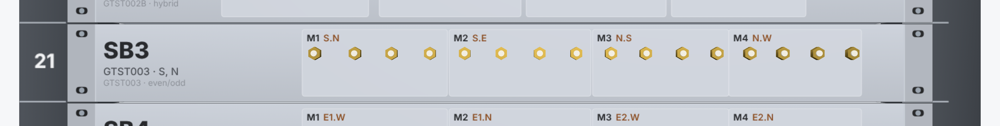
T1T2T3T4T1T2T3T4T1T2T3T4T1T2T3T4 T1T2T3T4T1T2T3T4T1T2T3T4T1T2T3T4
T1T2T3T4T1T2T3T4T1T2T3T4T1T2T3T4Servers and traffic hosts

Fit these 8 items
| ID | What it is / part | Where | Mounting notes | Conf. |
|---|---|---|---|---|
| SRV-E2E | TG E2E controller + NMS 1U rack server (lab) | U35 · 483 × 44 mm face, 823 mm deep | lab rack server, stand-in Dell R260 (1U, 497 mm) / R660 (1U, 823 mm) / R760 (2U, 772 mm) connectors rear: 1 SFP, 1 RJ45, 1 C14 switched OFF at t0 | estimate |
| SRV-DPIR | DPIR planner + predictor 2U rack server (lab) | U33-U34 · 483 × 88 mm face, 772 mm deep | lab rack server, stand-in Dell R260 (1U, 497 mm) / R660 (1U, 823 mm) / R760 (2U, 772 mm) connectors rear: 1 SFP, 1 RJ45, 1 C14 switched OFF at t0 | estimate |
| HOST-W1 | traffic host, sites W1 1U rack server, 10G SFP+ NIC | U32 · 483 × 44 mm face, 497 mm deep | lab rack server, stand-in Dell R260 (1U, 497 mm) / R660 (1U, 823 mm) / R760 (2U, 772 mm) connectors rear: 1 SFP, 1 RJ45, 1 C14 | estimate |
| HOST-W2 | traffic host, sites W2 1U rack server, 10G SFP+ NIC | U31 · 483 × 44 mm face, 497 mm deep | lab rack server, stand-in Dell R260 (1U, 497 mm) / R660 (1U, 823 mm) / R760 (2U, 772 mm) connectors rear: 1 SFP, 1 RJ45, 1 C14 | estimate |
| HOST-E1 | traffic host, sites E1 1U rack server, 10G SFP+ NIC | U30 · 483 × 44 mm face, 497 mm deep | lab rack server, stand-in Dell R260 (1U, 497 mm) / R660 (1U, 823 mm) / R760 (2U, 772 mm) connectors rear: 1 SFP, 1 RJ45, 1 C14 | estimate |
| HOST-E2 | traffic host, sites E2 1U rack server, 10G SFP+ NIC | U29 · 483 × 44 mm face, 497 mm deep | lab rack server, stand-in Dell R260 (1U, 497 mm) / R660 (1U, 823 mm) / R760 (2U, 772 mm) connectors rear: 1 SFP, 1 RJ45, 1 C14 | estimate |
| HOST-S | traffic host, sites S 1U rack server, 10G SFP+ NIC | U28 · 483 × 44 mm face, 497 mm deep | lab rack server, stand-in Dell R260 (1U, 497 mm) / R660 (1U, 823 mm) / R760 (2U, 772 mm) connectors rear: 1 SFP, 1 RJ45, 1 C14 | estimate |
| HOST-N | traffic host, sites N 1U rack server, 10G SFP+ NIC | U27 · 483 × 44 mm face, 497 mm deep | lab rack server, stand-in Dell R260 (1U, 497 mm) / R660 (1U, 823 mm) / R760 (2U, 772 mm) connectors rear: 1 SFP, 1 RJ45, 1 C14 | estimate |
Switches, cable manager, shelves

Fit these 11 items
| ID | What it is / part | Where | Mounting notes | Conf. |
|---|---|---|---|---|
| GNSS-SPL | GNSS splitter 1x8 (if the boxes take GNSS) RMALDCBS1X8 | U38 · 483 × 44 mm face, 216 mm deep | RMALDCBS1X8 1U, 216 mm, 5.4 kg; connectors at the rear assumed connectors rear: 9 SMA, 1 C14 | likely |
| SW-DATA | Data switch, VLAN per site Netgear M4350-24F4V | U37 · 483 × 44 mm face, 400 mm deep | Netgear M4350-24F4V 440 x 43.2 x 400 mm; ports on the front connectors front: 28 SFP; rear: 1 C14 | likely |
| SW-OOB | Management switch (lab equipment) Netgear M4250-26G4XF-PoE+ (GSM4230PX) | U36 · 483 × 44 mm face, 400 mm deep | Netgear GSM4230PX 440 x 43.2 x 400 mm; all ports on Netgear's 'back' face, mounted facing the rack rear connectors rear: 26 RJ45, 4 SFP, 1 C14 | likely |
| AGENTS | Shelf: 6 MARL agent PCs mini PCs on a 1U shelf, 2U clearance | U25-U26 · 483 × 88 mm face, 254 mm deep | 1U vented shelf StarTech CABSHELFV1U (254 mm) carries 6: AGENT-W1, AGENT-W2, AGENT-E1, AGENT-E2, AGENT-S, AGENT-N | likely |
| CM | Cable manager Panduit NCMHF1 | U24 · 483 × 44 mm face, 95 mm deep | Panduit NCMHF1 1U horizontal cable manager | likely |
| AGENT-W1 | mini PC MARL agent mini PC (2 NICs) | on AGENTS (U25-U26): 30 mm from the left ear, 10 mm behind the front rail | mini PC size estimate connectors rear: 2 RJ45, 1 C5 | estimate |
| AGENT-W2 | mini PC MARL agent mini PC (2 NICs) | on AGENTS (U25-U26): 180 mm from the left ear, 10 mm behind the front rail | mini PC size estimate connectors rear: 2 RJ45, 1 C5 | estimate |
| AGENT-E1 | mini PC MARL agent mini PC (2 NICs) | on AGENTS (U25-U26): 330 mm from the left ear, 10 mm behind the front rail | mini PC size estimate connectors rear: 2 RJ45, 1 C5 | estimate |
| AGENT-E2 | mini PC MARL agent mini PC (2 NICs) | on AGENTS (U25-U26): 30 mm from the left ear, 135 mm behind the front rail | mini PC size estimate connectors rear: 2 RJ45, 1 C5 | estimate |
| AGENT-S | mini PC MARL agent mini PC (2 NICs) | on AGENTS (U25-U26): 180 mm from the left ear, 135 mm behind the front rail | mini PC size estimate connectors rear: 2 RJ45, 1 C5 | estimate |
| AGENT-N | mini PC MARL agent mini PC (2 NICs) | on AGENTS (U25-U26): 330 mm from the left ear, 135 mm behind the front rail | mini PC size estimate connectors rear: 2 RJ45, 1 C5 | estimate |
Blanking panels

Fit these 4 items
| ID | What it is / part | Where | Mounting notes | Conf. |
|---|---|---|---|---|
| BLANK-U39 | blanking panel AR8136BLK | U39 · 483 × 44 mm face, 28 mm deep | likely | |
| BLANK-U40 | blanking panel AR8136BLK | U40 · 483 × 44 mm face, 28 mm deep | likely | |
| BLANK-U41 | blanking panel AR8136BLK | U41 · 483 × 44 mm face, 28 mm deep | likely | |
| BLANK-U42 | blanking panel AR8136BLK | U42 · 483 × 44 mm face, 28 mm deep | likely |
Bench table

Fit these 24 items
| ID | What it is / part | Where | Mounting notes | Conf. |
|---|---|---|---|---|
| BENCH-CTL | PC bench controller: event script, ATT / PDU commands, logging (always on) | table: 20 mm from the rack-side end, 310 mm from the front edge | small form-factor PC connectors rear: 1 RJ45, 1 C14, 1 DP, 1 USB | estimate |
| MONITOR | monitor 24-inch monitor (operator station) | table: 240 mm from the rack-side end, 390 mm from the front edge | 24-inch monitor on a stand connectors rear: 1 DP, 1 C14 | estimate |
| KBD | keyboard keyboard + mouse | table: 220 mm from the rack-side end, 60 mm from the front edge | keyboard + mouse connectors rear: 1 USB | estimate |
| MWATT | multi-channel attenuator Keysight J7204B, 4 ch | table: 1220 mm from the rack-side end, 60 mm from the front edge | Keysight J7204B (parts research dims); SMA ports on the front assumed connectors front: 8 SMA; rear: 1 RJ45, 1 C14 | likely |
| IP50-W1-CORE@W1 | IP-50 radio IP-50, hop W1-CORE at W1 | table: 700 mm from the rack-side end, 20 mm from the front edge | Ceragon IP-50CX (about 6 kg; size estimate, ceragon.com not reachable) laid flat; waveguide flange on the side toward MWATT connectors rear: 2 RJ45, 1 DC; side: 1 WG carries 1: WGT-W1-CORE-A | estimate |
| IP50-W1-CORE@CORE | IP-50 radio IP-50, hop W1-CORE at CORE | table: 1936 mm from the rack-side end, 20 mm from the front edge | Ceragon IP-50CX (about 6 kg; size estimate, ceragon.com not reachable) laid flat; waveguide flange on the side toward MWATT connectors rear: 2 RJ45, 1 DC; side: 1 WG carries 1: WGT-W1-CORE-B | estimate |
| IP50-CORE-E1@CORE | IP-50 radio IP-50, hop CORE-E1 at CORE | table: 700 mm from the rack-side end, 270 mm from the front edge | Ceragon IP-50CX (about 6 kg; size estimate, ceragon.com not reachable) laid flat; waveguide flange on the side toward MWATT connectors rear: 2 RJ45, 1 DC; side: 1 WG carries 1: WGT-CORE-E1-A | estimate |
| IP50-CORE-E1@E1 | IP-50 radio IP-50, hop CORE-E1 at E1 | table: 1936 mm from the rack-side end, 270 mm from the front edge | Ceragon IP-50CX (about 6 kg; size estimate, ceragon.com not reachable) laid flat; waveguide flange on the side toward MWATT connectors rear: 2 RJ45, 1 DC; side: 1 WG carries 1: WGT-CORE-E1-B | estimate |
| IP50-W1-W2@W1 | IP-50 radio IP-50, hop W1-W2 at W1 | table: 700 mm from the rack-side end, 520 mm from the front edge | Ceragon IP-50CX (about 6 kg; size estimate, ceragon.com not reachable) laid flat; waveguide flange on the side toward MWATT connectors rear: 2 RJ45, 1 DC; side: 1 WG carries 1: WGT-W1-W2-A | estimate |
| IP50-W1-W2@W2 | IP-50 radio IP-50, hop W1-W2 at W2 | table: 1936 mm from the rack-side end, 520 mm from the front edge | Ceragon IP-50CX (about 6 kg; size estimate, ceragon.com not reachable) laid flat; waveguide flange on the side toward MWATT connectors rear: 2 RJ45, 1 DC; side: 1 WG carries 1: WGT-W1-W2-B | estimate |
| IP50-E1-E2@E1 | IP-50 radio IP-50, hop E1-E2 at E1 | table: 700 mm from the rack-side end, 20 mm from the front edge | Ceragon IP-50CX (about 6 kg; size estimate, ceragon.com not reachable) laid flat; waveguide flange on the side toward MWATT connectors rear: 2 RJ45, 1 DC; side: 1 WG carries 1: WGT-E1-E2-A | estimate |
| IP50-E1-E2@E2 | IP-50 radio IP-50, hop E1-E2 at E2 | table: 1936 mm from the rack-side end, 20 mm from the front edge | Ceragon IP-50CX (about 6 kg; size estimate, ceragon.com not reachable) laid flat; waveguide flange on the side toward MWATT connectors rear: 2 RJ45, 1 DC; side: 1 WG carries 1: WGT-E1-E2-B | estimate |
| PSU-W1-CORE@CORE | power supply 48 V supply, switched at t0 | table: 1220 mm from the rack-side end, 690 mm from the front edge | isolated 48 V 120 W desktop supply (e.g. Mean Well GST120A48) connectors rear: 1 DC, 1 C14 switched OFF at t0 | estimate |
| PSU-CORE-E1@CORE | power supply 48 V supply, switched at t0 | table: 1410 mm from the rack-side end, 690 mm from the front edge | isolated 48 V 120 W desktop supply (e.g. Mean Well GST120A48) connectors rear: 1 DC, 1 C14 switched OFF at t0 | estimate |
| SPECAN | spectrum analyser spectrum analyser / power sensor | table: 2520 mm from the rack-side end, 60 mm from the front edge | R&S FPL1026 408 x 186 x 235 mm; RF in (2.92 mm F) at the lower right of the front connectors rear: 1 RJ45, 1 C14 | likely |
| TABLE-STRIP | mains strip bench mains strip, C13 | table: 980 mm from the rack-side end, 730 mm from the front edge | bench mains strip, C13 (part TBC) connectors top: 4 C13 | estimate |
| WGT-W1-CORE-A | waveguide transition Pasternack PEWCA1003 WR-62 to SMA-F (33.3 mm flange); band to confirm | on IP50-W1-CORE@W1 (on its waveguide flange) | Pasternack PEWCA1003 WR-62 to SMA-F (33.3 mm flange); band to confirm connectors side: 1 WG, 1 SMA | estimate |
| WGT-W1-CORE-B | waveguide transition Pasternack PEWCA1003 WR-62 to SMA-F (33.3 mm flange); band to confirm | on IP50-W1-CORE@CORE (on its waveguide flange) | Pasternack PEWCA1003 WR-62 to SMA-F (33.3 mm flange); band to confirm connectors side: 1 WG, 1 SMA | estimate |
| WGT-CORE-E1-A | waveguide transition Pasternack PEWCA1003 WR-62 to SMA-F (33.3 mm flange); band to confirm | on IP50-CORE-E1@CORE (on its waveguide flange) | Pasternack PEWCA1003 WR-62 to SMA-F (33.3 mm flange); band to confirm connectors side: 1 WG, 1 SMA | estimate |
| WGT-CORE-E1-B | waveguide transition Pasternack PEWCA1003 WR-62 to SMA-F (33.3 mm flange); band to confirm | on IP50-CORE-E1@E1 (on its waveguide flange) | Pasternack PEWCA1003 WR-62 to SMA-F (33.3 mm flange); band to confirm connectors side: 1 WG, 1 SMA | estimate |
| WGT-W1-W2-A | waveguide transition Pasternack PEWCA1003 WR-62 to SMA-F (33.3 mm flange); band to confirm | on IP50-W1-W2@W1 (on its waveguide flange) | Pasternack PEWCA1003 WR-62 to SMA-F (33.3 mm flange); band to confirm connectors side: 1 WG, 1 SMA | estimate |
| WGT-W1-W2-B | waveguide transition Pasternack PEWCA1003 WR-62 to SMA-F (33.3 mm flange); band to confirm | on IP50-W1-W2@W2 (on its waveguide flange) | Pasternack PEWCA1003 WR-62 to SMA-F (33.3 mm flange); band to confirm connectors side: 1 WG, 1 SMA | estimate |
| WGT-E1-E2-A | waveguide transition Pasternack PEWCA1003 WR-62 to SMA-F (33.3 mm flange); band to confirm | on IP50-E1-E2@E1 (on its waveguide flange) | Pasternack PEWCA1003 WR-62 to SMA-F (33.3 mm flange); band to confirm connectors side: 1 WG, 1 SMA | estimate |
| WGT-E1-E2-B | waveguide transition Pasternack PEWCA1003 WR-62 to SMA-F (33.3 mm flange); band to confirm | on IP50-E1-E2@E2 (on its waveguide flange) | Pasternack PEWCA1003 WR-62 to SMA-F (33.3 mm flange); band to confirm connectors side: 1 WG, 1 SMA | estimate |
Cable: AC mains

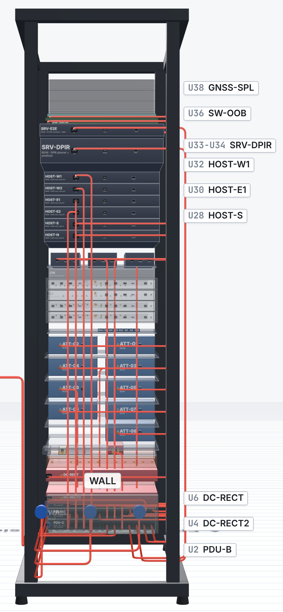
Where the cable ends land in the rack
Cable ends of this step per rack item, top to bottom. Ends on the bench table are in the table that follows.
| Rack item | U | Cable ends |
|---|---|---|
| GNSS-SPL | U38 | 1 |
| SW-DATA | U37 | 1 |
| SW-OOB | U36 | 1 |
| SRV-E2E | U35 | 1 |
| SRV-DPIR | U33-U34 | 1 |
| HOST-W1 | U32 | 1 |
| HOST-W2 | U31 | 1 |
| HOST-E1 | U30 | 1 |
| HOST-E2 | U29 | 1 |
| HOST-S | U28 | 1 |
| HOST-N | U27 | 1 |
| AGENTS | U25-U26 | 6 |
| ATT-SHELF-1 | U17-U18 | 2 |
| ATT-SHELF-2 | U15-U16 | 2 |
| ATT-SHELF-3 | U13-U14 | 2 |
| ATT-SHELF-4 | U11-U12 | 2 |
| ATT-SHELF-5 | U9-U10 | 1 |
| PA-SHELF | U8 | 1 |
| DC-RECT | U6 | 1 |
| DC-RECT2 | U4 | 1 |
| PDU-A | U3 | 13 |
| PDU-B | U2 | 13 |
| PDU-C | U1 | 8 |
Connect these 38 cables
| ID | From | To | Part | Length · route mm | VLAN / note |
|---|---|---|---|---|---|
| A001 | WALL.S1 Lab wall socket IEC 60309 16 A | PDU-A.inlet | PDU cord (IEC 60309 16 A plug) | fixed · route 1448 | |
| A002 | WALL.S2 Lab wall socket IEC 60309 16 A | PDU-B.inlet | PDU cord (IEC 60309 16 A plug) | fixed · route 1333 | |
| A003 | WALL.S3 Lab wall socket IEC 60309 16 A | PDU-C.inlet | PDU cord (IEC 60309 16 A plug) | fixed · route 1217 | |
| A004 | PDU-A.O1 | DC-RECT.ac | Eaton Tripp Lite P004-006 C14-C13 lead 1.83 m | 1.83 m · route 959 | |
| A005 | PDU-A.O2 | DC-RECT2.ac | Eaton Tripp Lite P004-006 C14-C13 lead 1.83 m | 1.83 m · route 682 | |
| A006 | PDU-A.O3 | SW-DATA.ac | Eaton Tripp Lite P004-010 C14-C13 lead 3.05 m | 3.05 m · route 2478 | length from the twin route (2478 mm) |
| A007 | PDU-A.O4 | SW-OOB.ac | Eaton Tripp Lite P004-010 C14-C13 lead 3.05 m | 3.05 m · route 2480 | length from the twin route (2480 mm) |
| A008 | PDU-A.O5 | GNSS-SPL.ac | Eaton Tripp Lite P004-010 C14-C13 lead 3.05 m | 3.05 m · route 2431 | length from the twin route (2431 mm) |
| A009 | PDU-A.O6 | ATT-01.ac | Eaton Tripp Lite P004-006 C14-C13 lead 1.83 m | 1.83 m · route 800 | attenuator box power: own adapter, inlet TBC |
| A010 | PDU-A.O7 | ATT-02.ac | Eaton Tripp Lite P004-006 C14-C13 lead 1.83 m | 1.83 m · route 1500 | attenuator box power: own adapter, inlet TBC |
| A011 | PDU-A.O8 | ATT-03.ac | Eaton Tripp Lite P004-006 C14-C13 lead 1.83 m | 1.83 m · route 791 | attenuator box power: own adapter, inlet TBC |
| A012 | PDU-A.O9 | ATT-04.ac | Eaton Tripp Lite P004-006 C14-C13 lead 1.83 m | 1.83 m · route 1504 | attenuator box power: own adapter, inlet TBC |
| A013 | PDU-A.O10 | ATT-05.ac | Eaton Tripp Lite P004-006 C14-C13 lead 1.83 m | 1.83 m · route 1106 | attenuator box power: own adapter, inlet TBC |
| A014 | PDU-A.O11 | ATT-06.ac | Eaton Tripp Lite P004-006 C14-C13 lead 1.83 m | 1.83 m · route 607 | attenuator box power: own adapter, inlet TBC |
| A015 | PDU-A.O12 | ATT-07.ac | Eaton Tripp Lite P004-006 C14-C13 lead 1.83 m | 1.83 m · route 1109 | attenuator box power: own adapter, inlet TBC |
| A016 | PDU-B.O1 | ATT-08.ac | Eaton Tripp Lite P004-006 C14-C13 lead 1.83 m | 1.83 m · route 1074 | attenuator box power: own adapter, inlet TBC |
| A017 | PDU-B.O2 | ATT-09.ac | Eaton Tripp Lite P004-006 C14-C13 lead 1.83 m | 1.83 m · route 748 | attenuator box power: own adapter, inlet TBC |
| A018 | PDU-B.O3 | AGENT-W1.ac | Eaton Tripp Lite P014-006 C14-C5 'Mickey' lead 1.83 m | 1.83 m · route 1212 | agent PC power brick |
| A019 | PDU-B.O4 | AGENT-W2.ac | Eaton Tripp Lite P014-010 C14-C5 lead 3.05 m | 3.05 m · route 1684 | agent PC power brick; length from the twin route (1684 mm) |
| A020 | PDU-B.O5 | AGENT-E1.ac | Eaton Tripp Lite P014-010 C14-C5 lead 3.05 m | 3.05 m · route 1880 | agent PC power brick; length from the twin route (1880 mm) |
| A021 | PDU-B.O6 | AGENT-E2.ac | Eaton Tripp Lite P014-006 C14-C5 'Mickey' lead 1.83 m | 1.83 m · route 1295 | agent PC power brick |
| A022 | PDU-B.O7 | AGENT-S.ac | Eaton Tripp Lite P014-006 C14-C5 'Mickey' lead 1.83 m | 1.83 m · route 1285 | agent PC power brick |
| A023 | PDU-B.O8 | AGENT-N.ac | Eaton Tripp Lite P014-010 C14-C5 lead 3.05 m | 3.05 m · route 2021 | agent PC power brick; length from the twin route (2021 mm) |
| A024 | PDU-B.O9 | HOST-W1.ac | Eaton Tripp Lite P004-010 C14-C13 lead 3.05 m | 3.05 m · route 1868 | length from the twin route (1868 mm) |
| A025 | PDU-B.O10 | HOST-W2.ac | Eaton Tripp Lite P004-010 C14-C13 lead 3.05 m | 3.05 m · route 1683 | length from the twin route (1683 mm) |
| A026 | PDU-B.O11 | HOST-E1.ac | Eaton Tripp Lite P004-006 C14-C13 lead 1.83 m | 1.83 m · route 1619 | |
| A027 | PDU-B.O12 | HOST-E2.ac | Eaton Tripp Lite P004-006 C14-C13 lead 1.83 m | 1.83 m · route 1614 | |
| A028 | PDU-C.O1 | HOST-S.ac | Eaton Tripp Lite P004-010 C14-C13 lead 3.05 m | 3.05 m · route 2062 | length from the twin route (2062 mm) |
| A029 | PDU-C.O2 | HOST-N.ac | Eaton Tripp Lite P004-010 C14-C13 lead 3.05 m | 3.05 m · route 2064 | length from the twin route (2064 mm) |
| A030 | PDU-C.O3 | SRV-E2E.ac | Eaton Tripp Lite P004-015 C14-C13 lead 4.57 m | 4.57 m · route 2791 | switched off at t0 (outlet switching); length from the twin route (2791 mm) dead after t0 |
| A031 | PDU-C.O4 | SRV-DPIR.ac | Eaton Tripp Lite P004-010 C14-C13 lead 3.05 m | 3.05 m · route 2720 | switched off at t0 (outlet switching) dead after t0 |
| A032 | PDU-C.O5 | INJ-HUB.ac | Eaton Tripp Lite P014-006 C14-C5 'Mickey' lead 1.83 m (injector inlet TBC) | 1.83 m · route 508 | switched off at t0 (outlet switching): the node loses power dead after t0 |
| A033 | PDU-C.O6 | PSU-W1-CORE@CORE.ac | Eaton Tripp Lite P004-015 C14-C13 lead 4.57 m | 4.57 m · route 3021 | switched off at t0 (outlet switching); length from the twin route (3021 mm) dead after t0 |
| A034 | PDU-C.O7 | PSU-CORE-E1@CORE.ac | Eaton Tripp Lite P004-015 C14-C13 lead 4.57 m | 4.57 m · route 3192 | switched off at t0 (outlet switching); length from the twin route (3192 mm) dead after t0 |
| A035 | TABLE-STRIP.O1 TABLE-STRIP | BENCH-CTL.ac | Eaton Tripp Lite P004-006 C14-C13 lead 1.83 m | 1.83 m · route 1378 | |
| A036 | TABLE-STRIP.O2 TABLE-STRIP | MONITOR.ac | Eaton Tripp Lite P004-006 C14-C13 lead 1.83 m | 1.83 m · route 1195 | |
| A037 | TABLE-STRIP.O3 TABLE-STRIP | SPECAN.ac | Eaton Tripp Lite P004-010 C14-C13 lead 3.05 m | 3.05 m · route 2135 | length from the twin route (2135 mm) |
| A038 | TABLE-STRIP.O4 TABLE-STRIP | MWATT.ac | Eaton Tripp Lite P004-006 C14-C13 lead 1.83 m | 1.83 m · route 319 | inlet type TBC |
Cable: DC power

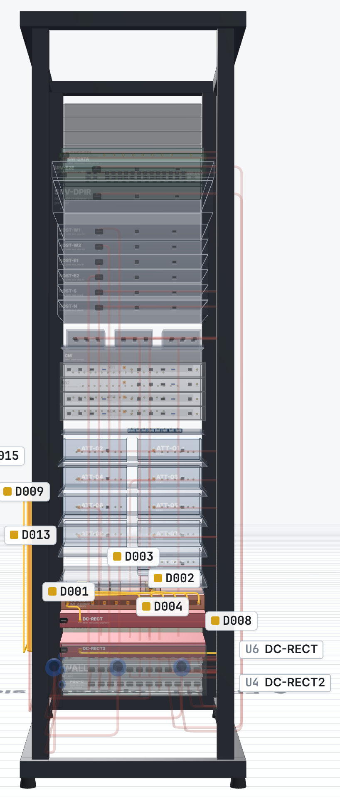
Where the cable ends land in the rack
Cable ends of this step per rack item, top to bottom. Ends on the bench table are in the table that follows.
| Rack item | U | Cable ends |
|---|---|---|
| PA-SHELF | U8 | 6 |
| DC-DIST | U7 | 7 |
| DC-RECT | U6 | 1 |
| DC-DIST2 | U5 | 7 |
| DC-RECT2 | U4 | 1 |
Connect these 16 cables
| ID | From | To | Part | Length · route mm | VLAN / note |
|---|---|---|---|---|---|
| D001 | DC-RECT.bus | DC-DIST.bus | DC bus link 2 x 10 AWG with ring lugs | 0.25 m (cut) · route 206 | 48 V bus |
| D002 | DC-DIST.CB1 | PA-01.dc | Belden 8461 2 x 18 AWG + Phoenix 3200519 ferrules | 0.5 m (cut) · route 270 | feeds node W1 |
| D003 | DC-DIST.CB2 | PA-02.dc | Belden 8461 2 x 18 AWG + Phoenix 3200519 ferrules | 0.75 m (cut) · route 458 | feeds node W2 |
| D004 | DC-DIST.CB3 | PA-03.dc | Belden 8461 2 x 18 AWG + Phoenix 3200519 ferrules | 0.25 m (cut) · route 218 | feeds node S |
| D005 | DC-DIST.CB4 | PA-04.dc | Belden 8461 2 x 18 AWG + Phoenix 3200519 ferrules | 0.5 m (cut) · route 406 | feeds node N |
| D006 | DC-DIST.CB5 | PA-05.dc | Belden 8461 2 x 18 AWG + Phoenix 3200519 ferrules | 0.25 m (cut) · route 166 | feeds node E1 |
| D007 | DC-DIST.CB6 | PA-06.dc | Belden 8461 2 x 18 AWG + Phoenix 3200519 ferrules | 0.5 m (cut) · route 354 | feeds node E2 |
| D008 | DC-RECT2.out | DC-DIST2.bus | DC bus link 2 x 10 AWG with ring lugs (A and B buses) | 1.5 m (cut) · route 1205 | -48 V bus, positive grounded |
| D009 | DC-DIST2.F1 | IP50-W1-CORE@W1.dc | Belden 8461 2 x 18 AWG (IP-50 connector TBC) | 3.75 m (cut) · route 3287 | -48 V through a GMT fuse |
| D010 | PSU-W1-CORE@CORE.out | IP50-W1-CORE@CORE.dc | Belden 8461 2 x 18 AWG (IP-50 connector TBC) | 1.75 m (cut) · route 1541 | -48 V (positive grounded) from its own supply, switched off at t0 dead after t0 |
| D011 | PSU-CORE-E1@CORE.out | IP50-CORE-E1@CORE.dc | Belden 8461 2 x 18 AWG (IP-50 connector TBC) | 1.25 m (cut) · route 920 | -48 V (positive grounded) from its own supply, switched off at t0 dead after t0 |
| D012 | DC-DIST2.F2 | IP50-CORE-E1@E1.dc | Belden 8461 2 x 18 AWG (IP-50 connector TBC) | 4.75 m (cut) · route 4261 | -48 V through a GMT fuse |
| D013 | DC-DIST2.F3 | IP50-W1-W2@W1.dc | Belden 8461 2 x 18 AWG (IP-50 connector TBC) | 3.25 m (cut) · route 2753 | -48 V through a GMT fuse |
| D014 | DC-DIST2.F4 | IP50-W1-W2@W2.dc | Belden 8461 2 x 18 AWG (IP-50 connector TBC) | 4.5 m (cut) · route 3991 | -48 V through a GMT fuse |
| D015 | DC-DIST2.F5 | IP50-E1-E2@E1.dc | Belden 8461 2 x 18 AWG (IP-50 connector TBC) | 3.75 m (cut) · route 3202 | -48 V through a GMT fuse |
| D016 | DC-DIST2.F6 | IP50-E1-E2@E2.dc | Belden 8461 2 x 18 AWG (IP-50 connector TBC) | 4.75 m (cut) · route 4255 | -48 V through a GMT fuse |
Cable: PoE to the nodes
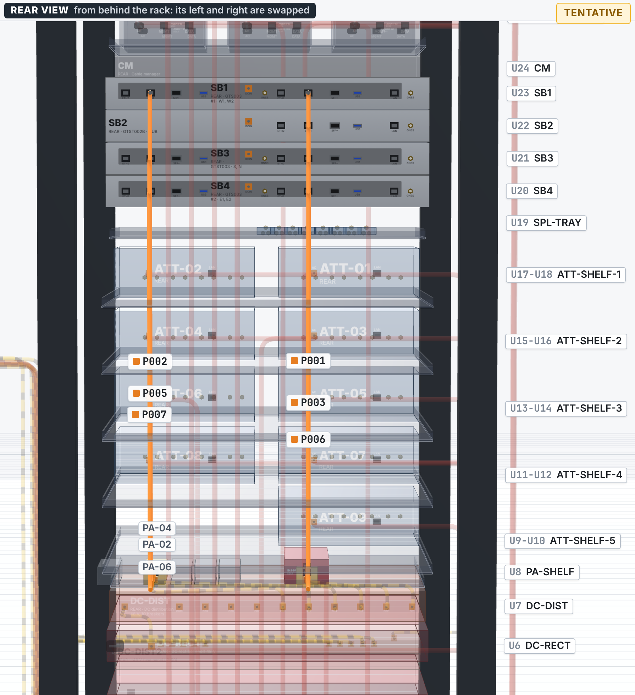
Connect these 7 cables
| ID | From | To | Part | Length · route mm | VLAN / note |
|---|---|---|---|---|---|
| P001 | PA-01.rj45 | SB1.W1.ETH1 | Panduit STP6X1MBU Cat6A S/FTP 1 m | 1 m · route 814 | power only (passive adaptor) |
| P002 | PA-02.rj45 | SB1.W2.ETH1 | Panduit STP6X1MBU Cat6A S/FTP 1 m | 1 m · route 824 | power only (passive adaptor) |
| P003 | INJ-HUB.poe | SB2.HUB.ETH1 | Panduit STP6X1MBU Cat6A S/FTP 1 m | 1 m · route 788 | PoE from the AC injector (power only); switched off at t0 dead after t0 |
| P004 | PA-03.rj45 | SB3.S.ETH1 | Panduit STP6X1MBU Cat6A S/FTP 1 m | 1 m · route 755 | power only (passive adaptor) |
| P005 | PA-04.rj45 | SB3.N.ETH1 | Panduit STP6X1MBU Cat6A S/FTP 1 m | 1 m · route 765 | power only (passive adaptor) |
| P006 | PA-05.rj45 | SB4.E1.ETH1 | Panduit STP6X1MBU Cat6A S/FTP 1 m | 1 m · route 730 | power only (passive adaptor) |
| P007 | PA-06.rj45 | SB4.E2.ETH1 | Panduit STP6X1MBU Cat6A S/FTP 1 m | 1 m · route 740 | power only (passive adaptor) |
Cable: Data to SW-DATA

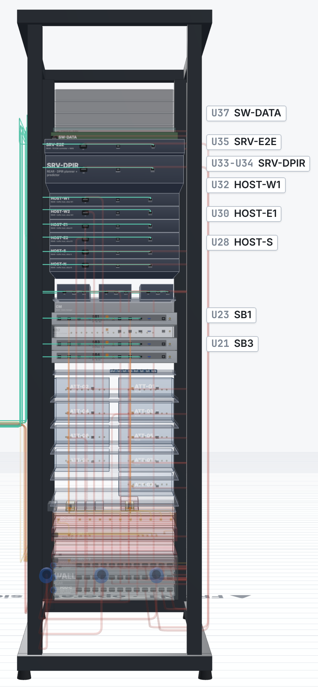
Where the cable ends land in the rack
Cable ends of this step per rack item, top to bottom. Ends on the bench table are in the table that follows.
| Rack item | U | Cable ends |
|---|---|---|
| SW-DATA | U37 | 28 |
| SRV-E2E | U35 | 1 |
| SRV-DPIR | U33-U34 | 1 |
| HOST-W1 | U32 | 1 |
| HOST-W2 | U31 | 1 |
| HOST-E1 | U30 | 1 |
| HOST-E2 | U29 | 1 |
| HOST-S | U28 | 1 |
| HOST-N | U27 | 1 |
| AGENTS | U25-U26 | 6 |
| SB1 | U23 | 2 |
| SB3 | U21 | 2 |
| SB4 | U20 | 2 |
Connect these 28 cables
| ID | From | To | Part | Length · route mm | VLAN / note |
|---|---|---|---|---|---|
| F001 | AGENT-W1.data | SW-DATA.P1 | Panduit STP6X2MBU Cat6A S/FTP 2 m + Netgear AGM734 1000BASE-T SFP at the switch | 2 m · route 1694 | VLAN 101 MARL agent + site routing |
| F002 | AGENT-W2.data | SW-DATA.P2 | Panduit STP6X2MBU Cat6A S/FTP 2 m + Netgear AGM734 1000BASE-T SFP at the switch | 2 m · route 1556 | VLAN 102 MARL agent + site routing |
| F003 | AGENT-E1.data | SW-DATA.P3 | Panduit STP6X2MBU Cat6A S/FTP 2 m + Netgear AGM734 1000BASE-T SFP at the switch | 2 m · route 1421 | VLAN 104 MARL agent + site routing |
| F004 | AGENT-E2.data | SW-DATA.P4 | Panduit STP6X3MBU Cat6A S/FTP 3 m + Netgear AGM734 1000BASE-T SFP at the switch | 3 m · route 1858 | VLAN 105 MARL agent + site routing; length from the twin route (1858 mm) |
| F005 | AGENT-S.data | SW-DATA.P5 | Panduit STP6X2MBU Cat6A S/FTP 2 m + Netgear AGM734 1000BASE-T SFP at the switch | 2 m · route 1723 | VLAN 106 MARL agent + site routing |
| F006 | AGENT-N.data | SW-DATA.P6 | Panduit STP6X2MBU Cat6A S/FTP 2 m + Netgear AGM734 1000BASE-T SFP at the switch | 2 m · route 1585 | VLAN 107 MARL agent + site routing |
| F007 | SB1.W1.SFP+ | SW-DATA.P7 | SFP+ SR at both ends (Siklu AX-SFP+10G-MM / Netgear AXM761) + Panduit FZ2ERLNLNSNM003 OM4 LC-LC 3 m | 3 m · route 1995 | VLAN 101 node W1 data, in-band management; length from the twin route (1995 mm) |
| F008 | IP50-W1-CORE@W1.data | SW-DATA.P8 | SFP+ SR at both ends (IP-50CX SFP+ optic TBC / Netgear AXM761) + Panduit FZ2ERLNLNSNM005 OM4 LC-LC 5 m | 5 m · route 3534 | VLAN 101 hop W1-CORE: IP-50CX 10GbE port (a hop can exceed 1 Gb/s); length from the twin route (3534 mm) |
| F009 | IP50-W1-W2@W1.data | SW-DATA.P9 | SFP+ SR at both ends (IP-50CX SFP+ optic TBC / Netgear AXM761) + Panduit FZ2ERLNLNSNM005 OM4 LC-LC 5 m | 5 m · route 3245 | VLAN 101 hop W1-W2: IP-50CX 10GbE port (a hop can exceed 1 Gb/s); length from the twin route (3245 mm) |
| F010 | HOST-W1.nic10g | SW-DATA.P10 | Netgear AXC763-10000S SFP+ DAC 3 m | 3 m · route 1768 | VLAN 101 traffic host |
| F011 | SB1.W2.SFP+ | SW-DATA.P11 | SFP+ SR at both ends (Siklu AX-SFP+10G-MM / Netgear AXM761) + Panduit FZ2ERLNLNSNM002 OM4 LC-LC 2 m | 2 m · route 1786 | VLAN 102 node W2 data, in-band management |
| F012 | IP50-W1-W2@W2.data | SW-DATA.P12 | SFP+ SR at both ends (IP-50CX SFP+ optic TBC / Netgear AXM761) + Panduit FZ2ERLNLNSNM005 OM4 LC-LC 5 m | 5 m · route 4490 | VLAN 102 hop W1-W2: IP-50CX 10GbE port (a hop can exceed 1 Gb/s); length from the twin route (4490 mm) |
| F013 | HOST-W2.nic10g | SW-DATA.P13 | Netgear AXC763-10000S SFP+ DAC 3 m | 3 m · route 1615 | VLAN 102 traffic host |
| F014 | IP50-W1-CORE@CORE.data | SW-DATA.P14 | SFP+ SR at both ends (IP-50CX SFP+ optic TBC / Netgear AXM761) + Panduit FZ2ERLNLNSNM005 OM4 LC-LC 5 m | 5 m · route 4651 | VLAN 103 hop W1-CORE: IP-50CX 10GbE port (a hop can exceed 1 Gb/s); length from the twin route (4651 mm) |
| F015 | IP50-CORE-E1@CORE.data | SW-DATA.P15 | SFP+ SR at both ends (IP-50CX SFP+ optic TBC / Netgear AXM761) + Panduit FZ2ERLNLNSNM005 OM4 LC-LC 5 m | 5 m · route 3152 | VLAN 103 hop CORE-E1: IP-50CX 10GbE port (a hop can exceed 1 Gb/s); length from the twin route (3152 mm) |
| F016 | SRV-E2E.data | SW-DATA.P16 | Netgear AXC763-10000S SFP+ DAC 3 m | 3 m · route 1802 | VLAN 103 TG E2E controller + NMS dead after t0 |
| F017 | SRV-DPIR.data | SW-DATA.P17 | Netgear AXC763-10000S SFP+ DAC 3 m | 3 m · route 1785 | VLAN 103 DPIR planner + predictor dead after t0 |
| F018 | SB4.E1.SFP+ | SW-DATA.P18 | SFP+ SR at both ends (Siklu AX-SFP+10G-MM / Netgear AXM761) + Panduit FZ2ERLNLNSNM003 OM4 LC-LC 3 m | 3 m · route 1940 | VLAN 104 node E1 data, in-band management; length from the twin route (1940 mm) |
| F019 | IP50-CORE-E1@E1.data | SW-DATA.P19 | SFP+ SR at both ends (IP-50CX SFP+ optic TBC / Netgear AXM761) + Panduit FZ2ERLNLNSNM005 OM4 LC-LC 5 m | 5 m · route 4418 | VLAN 104 hop CORE-E1: IP-50CX 10GbE port (a hop can exceed 1 Gb/s); length from the twin route (4418 mm) |
| F020 | IP50-E1-E2@E1.data | SW-DATA.P20 | SFP+ SR at both ends (IP-50CX SFP+ optic TBC / Netgear AXM761) + Panduit FZ2ERLNLNSNM005 OM4 LC-LC 5 m | 5 m · route 3508 | VLAN 104 hop E1-E2: IP-50CX 10GbE port (a hop can exceed 1 Gb/s); length from the twin route (3508 mm) |
| F021 | HOST-E1.nic10g | SW-DATA.P21 | Netgear AXC763-10000S SFP+ DAC 3 m | 3 m · route 1719 | VLAN 104 traffic host |
| F022 | SB4.E2.SFP+ | SW-DATA.P22 | SFP+ SR at both ends (Siklu AX-SFP+10G-MM / Netgear AXM761) + Panduit FZ2ERLNLNSNM002 OM4 LC-LC 2 m | 2 m · route 1779 | VLAN 105 node E2 data, in-band management |
| F023 | IP50-E1-E2@E2.data | SW-DATA.P23 | SFP+ SR at both ends (IP-50CX SFP+ optic TBC / Netgear AXM761) + Panduit FZ2ERLNLNSNM005 OM4 LC-LC 5 m | 5 m · route 4701 | VLAN 105 hop E1-E2: IP-50CX 10GbE port (a hop can exceed 1 Gb/s); length from the twin route (4701 mm) |
| F024 | HOST-E2.nic10g | SW-DATA.P24 | Netgear AXC763-10000S SFP+ DAC 3 m | 3 m · route 1803 | VLAN 105 traffic host |
| F025 | SB3.S.SFP+ | SW-DATA.P25 | SFP+ SR at both ends (Siklu AX-SFP+10G-MM / Netgear AXM761) + Panduit FZ2ERLNLNSNM002 OM4 LC-LC 2 m | 2 m · route 1685 | VLAN 106 node S data, in-band management |
| F026 | HOST-S.nic10g | SW-DATA.P26 | Netgear AXC763-10000S SFP+ DAC 3 m | 3 m · route 1568 | VLAN 106 traffic host |
| F027 | SB3.N.SFP+ | SW-DATA.P27 | SFP+ SR at both ends (Siklu AX-SFP+10G-MM / Netgear AXM761) + Panduit FZ2ERLNLNSNM002 OM4 LC-LC 2 m | 2 m · route 1497 | VLAN 107 node N data, in-band management |
| F028 | HOST-N.nic10g | SW-DATA.P28 | Netgear AXC763-10000S SFP+ DAC 3 m | 3 m · route 1640 | VLAN 107 traffic host |
Cable: Management to SW-OOB

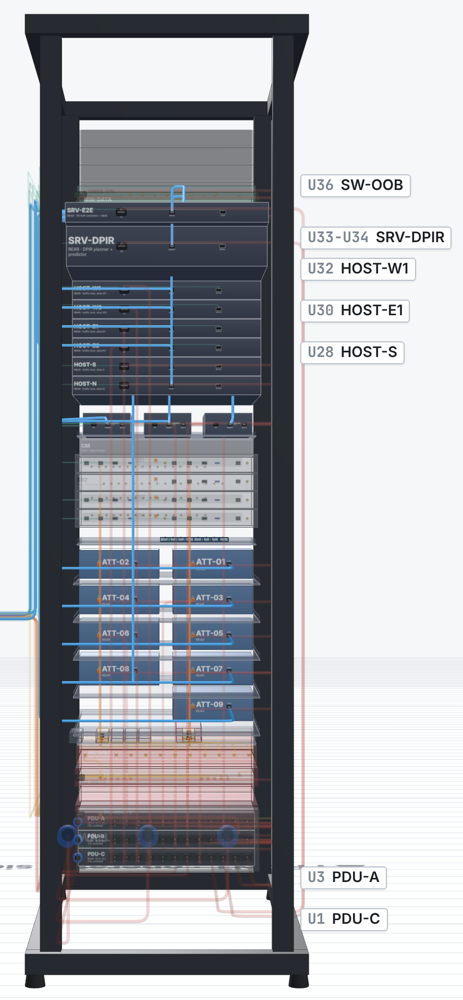
Where the cable ends land in the rack
Cable ends of this step per rack item, top to bottom. Ends on the bench table are in the table that follows.
| Rack item | U | Cable ends |
|---|---|---|
| SW-OOB | U36 | 29 |
| SRV-E2E | U35 | 1 |
| SRV-DPIR | U33-U34 | 1 |
| HOST-W1 | U32 | 1 |
| HOST-W2 | U31 | 1 |
| HOST-E1 | U30 | 1 |
| HOST-E2 | U29 | 1 |
| HOST-S | U28 | 1 |
| HOST-N | U27 | 1 |
| AGENTS | U25-U26 | 6 |
| ATT-SHELF-1 | U17-U18 | 2 |
| ATT-SHELF-2 | U15-U16 | 2 |
| ATT-SHELF-3 | U13-U14 | 2 |
| ATT-SHELF-4 | U11-U12 | 2 |
| ATT-SHELF-5 | U9-U10 | 1 |
| PDU-A | U3 | 1 |
| PDU-B | U2 | 1 |
| PDU-C | U1 | 1 |
Connect these 29 cables
| ID | From | To | Part | Length · route mm | VLAN / note |
|---|---|---|---|---|---|
| E001 | AGENT-W1.mgmt | SW-OOB.P1 | Panduit STP6X1MBU Cat6A S/FTP 1 m | 1 m · route 821 | VLAN 100 agent PC logging; length from the twin route (821 mm) |
| E002 | HOST-W1.mgmt | SW-OOB.P2 | Panduit STP6X2MBU Cat6A S/FTP 2 m | 2 m · route 1049 | VLAN 100 traffic host control; length from the twin route (1049 mm) |
| E003 | AGENT-W2.mgmt | SW-OOB.P3 | Panduit STP6X2MBU Cat6A S/FTP 2 m | 2 m · route 1539 | VLAN 100 agent PC logging |
| E004 | HOST-W2.mgmt | SW-OOB.P4 | Panduit STP6X2MBU Cat6A S/FTP 2 m | 2 m · route 1107 | VLAN 100 traffic host control; length from the twin route (1107 mm) |
| E005 | AGENT-E1.mgmt | SW-OOB.P5 | Panduit STP6X2MBU Cat6A S/FTP 2 m | 2 m · route 1402 | VLAN 100 agent PC logging |
| E006 | HOST-E1.mgmt | SW-OOB.P6 | Panduit STP6X2MBU Cat6A S/FTP 2 m | 2 m · route 1164 | VLAN 100 traffic host control; length from the twin route (1164 mm) |
| E007 | AGENT-E2.mgmt | SW-OOB.P7 | Panduit STP6X1MBU Cat6A S/FTP 1 m | 1 m · route 813 | VLAN 100 agent PC logging; length from the twin route (813 mm) |
| E008 | HOST-E2.mgmt | SW-OOB.P8 | Panduit STP6X2MBU Cat6A S/FTP 2 m | 2 m · route 1222 | VLAN 100 traffic host control; length from the twin route (1222 mm) |
| E009 | AGENT-S.mgmt | SW-OOB.P9 | Panduit STP6X1MBU Cat6A S/FTP 1 m | 1 m · route 840 | VLAN 100 agent PC logging; length from the twin route (840 mm) |
| E010 | HOST-S.mgmt | SW-OOB.P10 | Panduit STP6X1MBU Cat6A S/FTP 1 m | 1 m · route 650 | VLAN 100 traffic host control; length from the twin route (650 mm) |
| E011 | AGENT-N.mgmt | SW-OOB.P11 | Panduit STP6X2MBU Cat6A S/FTP 2 m | 2 m · route 1268 | VLAN 100 agent PC logging |
| E012 | HOST-N.mgmt | SW-OOB.P12 | Panduit STP6X1MBU Cat6A S/FTP 1 m | 1 m · route 695 | VLAN 100 traffic host control; length from the twin route (695 mm) |
| E013 | SRV-E2E.mgmt | SW-OOB.P13 | Panduit STP6X1MBU Cat6A S/FTP 1 m | 1 m · route 550 | VLAN 100 server management; length from the twin route (550 mm) dead after t0 |
| E014 | SRV-DPIR.mgmt | SW-OOB.P14 | Panduit STP6X1MBU Cat6A S/FTP 1 m | 1 m · route 562 | VLAN 100 server management; length from the twin route (562 mm) dead after t0 |
| E015 | BENCH-CTL.mgmt | SW-OOB.P15 | Panduit STP6X3MBU Cat6A S/FTP 3 m | 3 m · route 1945 | VLAN 100 server management |
| E016 | ATT-01.lan | SW-OOB.P16 | Panduit STP6X3MBU Cat6A S/FTP 3 m | 3 m · route 1902 | VLAN 100 attenuator control, SCPI over TCP; length from the twin route (1902 mm) |
| E017 | ATT-02.lan | SW-OOB.P17 | Panduit STP6X2MBU Cat6A S/FTP 2 m | 2 m · route 1234 | VLAN 100 attenuator control, SCPI over TCP |
| E018 | ATT-03.lan | SW-OOB.P18 | Panduit STP6X3MBU Cat6A S/FTP 3 m | 3 m · route 1956 | VLAN 100 attenuator control, SCPI over TCP; length from the twin route (1956 mm) |
| E019 | ATT-04.lan | SW-OOB.P19 | Panduit STP6X2MBU Cat6A S/FTP 2 m | 2 m · route 1324 | VLAN 100 attenuator control, SCPI over TCP |
| E020 | ATT-05.lan | SW-OOB.P20 | Panduit STP6X3MBU Cat6A S/FTP 3 m | 3 m · route 2057 | VLAN 100 attenuator control, SCPI over TCP; length from the twin route (2057 mm) |
| E021 | ATT-06.lan | SW-OOB.P21 | Panduit STP6X2MBU Cat6A S/FTP 2 m | 2 m · route 1414 | VLAN 100 attenuator control, SCPI over TCP |
| E022 | ATT-07.lan | SW-OOB.P22 | Panduit STP6X3MBU Cat6A S/FTP 3 m | 3 m · route 2159 | VLAN 100 attenuator control, SCPI over TCP; length from the twin route (2159 mm) |
| E023 | ATT-08.lan | SW-OOB.P23 | Panduit STP6X2MBU Cat6A S/FTP 2 m | 2 m · route 1504 | VLAN 100 attenuator control, SCPI over TCP |
| E024 | ATT-09.lan | SW-OOB.P24 | Panduit STP6X3MBU Cat6A S/FTP 3 m | 3 m · route 2261 | VLAN 100 attenuator control, SCPI over TCP; length from the twin route (2261 mm) |
| E025 | MWATT.lan | SW-OOB.P25 | Panduit STP6X5MBU Cat6A S/FTP 5 m | 5 m · route 3080 | VLAN 100 J7204B control (LAN); length from the twin route (3080 mm) |
| E026 | PDU-A.net | SW-OOB.P26 | Panduit STP6X3MBU Cat6A S/FTP 3 m | 3 m · route 2250 | VLAN 100 PDU management, outlet switching; length from the twin route (2250 mm) |
| E027 | PDU-B.net | SW-OOB.P27 | Panduit STP6X3MBU Cat6A S/FTP 3 m + Netgear AGM734 1000BASE-T SFP (SFP+ cage) | 3 m · route 2299 | VLAN 100 PDU management, outlet switching; length from the twin route (2299 mm) |
| E028 | PDU-C.net | SW-OOB.P28 | Panduit STP6X3MBU Cat6A S/FTP 3 m + Netgear AGM734 1000BASE-T SFP (SFP+ cage) | 3 m · route 2355 | VLAN 100 PDU management, outlet switching; length from the twin route (2355 mm) |
| E029 | SPECAN.lan | SW-OOB.P29 | Panduit STP6X7MBU Cat6A S/FTP 7 m + Netgear AGM734 1000BASE-T SFP (SFP+ cage) | 7 m · route 4664 | VLAN 100 analyser; length from the twin route (4664 mm) |
Cable: GNSS

Connect these 8 cables
| ID | From | To | Part | Length · route mm | VLAN / note |
|---|---|---|---|---|---|
| G001 | GNSS-ANT | GNSS-SPL.in | LMR-400 coax + surge arrestor (part TBC) | site · route 1418 | |
| G002 | GNSS-SPL.out1 | SB1.W1.GNSS | RG-316 SMA coax 2 m (part TBC) | 2 m · route 929 | only if the node's rear SMA is a GNSS input (TBC) |
| G003 | GNSS-SPL.out2 | SB1.W2.GNSS | RG-316 SMA coax 2 m (part TBC) | 2 m · route 1518 | only if the node's rear SMA is a GNSS input (TBC) |
| G004 | GNSS-SPL.out3 | SB2.HUB.GNSS | RG-316 SMA coax 2 m (part TBC) | 2 m · route 1746 | only if the node's rear SMA is a GNSS input (TBC) |
| G005 | GNSS-SPL.out4 | SB3.S.GNSS | RG-316 SMA coax 2 m (part TBC) | 2 m · route 1777 | only if the node's rear SMA is a GNSS input (TBC) |
| G006 | GNSS-SPL.out5 | SB3.N.GNSS | RG-316 SMA coax 2 m (part TBC) | 2 m · route 990 | only if the node's rear SMA is a GNSS input (TBC) |
| G007 | GNSS-SPL.out6 | SB4.E1.GNSS | RG-316 SMA coax 2 m (part TBC) | 2 m · route 1793 | only if the node's rear SMA is a GNSS input (TBC) |
| G008 | GNSS-SPL.out7 | SB4.E2.GNSS | RG-316 SMA coax 2 m (part TBC) | 2 m · route 1104 | only if the node's rear SMA is a GNSS input (TBC) |
Cable: Operator station

Connect these 2 cables
| ID | From | To | Part | Length · route mm | VLAN / note |
|---|---|---|---|---|---|
| X001 | BENCH-CTL.video | MONITOR.in | DisplayPort / HDMI cable 1.8 m (part TBC) | 1.8 m · route 558 | operator station |
| X002 | KBD.usb | BENCH-CTL.usb | USB keyboard + mouse (cables attached) | 1.5 m · route 646 | operator station |
IF link HUB-W1 (ATT-01)

Tile mapping: tile i → ATT-01 channel i
From the A-side tile through the attenuator to the B-side tile; passive parts are named with the ports used. 3D close-up: poc1_renders/link_HUB-W1.png (or search R001 in the twin and press "Trace signal").
| Tile | A side: tile, sector | A path | Attenuator | B path | B side: tile, sector |
|---|---|---|---|---|---|
| 1 | SB2.M1.T1 HUB.W | R001 → SPL-HUBW.t1 (P1→S) → R009 | ATT-01 CH1 in→out | R013 | SB1.M1.T1 W1.E |
| 2 | SB2.M1.T2 HUB.W | R002 → SPL-HUBW.t2 (P1→S) → R010 | ATT-01 CH2 in→out | R014 | SB1.M1.T2 W1.E |
| 3 | SB2.M1.T3 HUB.W | R003 → SPL-HUBW.t3 (P1→S) → R011 | ATT-01 CH3 in→out | R015 | SB1.M1.T3 W1.E |
| 4 | SB2.M1.T4 HUB.W | R004 → SPL-HUBW.t4 (P1→S) → R012 | ATT-01 CH4 in→out | R016 | SB1.M1.T4 W1.E |
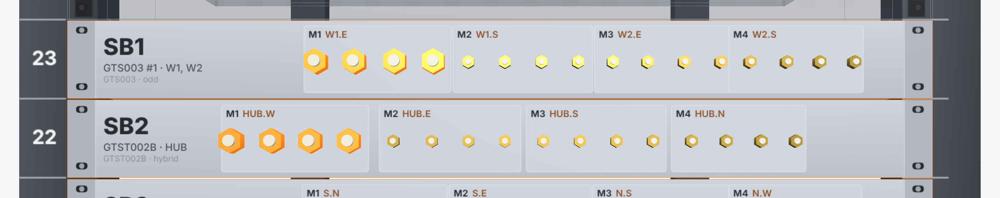
A1A2A3A4B1B2B3B4Connect these 12 cables
| ID | From | To | Part | Length · route mm | VLAN / note |
|---|---|---|---|---|---|
| R001 | SB2.M1.T1 | SPL-HUBW.t1.S | Mini-Circuits CBL-1FT-SMSM+ | 0.30 m · route 184 | HUB.W tile 1 to its splitter; span 3U, needs 0.23 m |
| R002 | SB2.M1.T2 | SPL-HUBW.t2.S | Mini-Circuits CBL-1FT-SMSM+ | 0.30 m · route 184 | HUB.W tile 2 to its splitter; span 3U, needs 0.23 m |
| R003 | SB2.M1.T3 | SPL-HUBW.t3.S | Mini-Circuits CBL-1FT-SMSM+ | 0.30 m · route 184 | HUB.W tile 3 to its splitter; span 3U, needs 0.23 m |
| R004 | SB2.M1.T4 | SPL-HUBW.t4.S | Mini-Circuits CBL-1FT-SMSM+ | 0.30 m · route 184 | HUB.W tile 4 to its splitter; span 3U, needs 0.23 m |
| R009 | SPL-HUBW.t1.P1 | ATT-01.ch1.in | Mini-Circuits CBL-1FT-SMSM+ | 0.30 m · route 195 | HUB-W1 tile 1; span 1U, needs 0.24 m |
| R010 | SPL-HUBW.t2.P1 | ATT-01.ch2.in | Mini-Circuits CBL-1FT-SMSM+ | 0.30 m · route 175 | HUB-W1 tile 2; span 1U, needs 0.24 m |
| R011 | SPL-HUBW.t3.P1 | ATT-01.ch3.in | Mini-Circuits CBL-1FT-SMSM+ | 0.30 m · route 154 | HUB-W1 tile 3; span 1U, needs 0.24 m |
| R012 | SPL-HUBW.t4.P1 | ATT-01.ch4.in | Mini-Circuits CBL-1FT-SMSM+ | 0.30 m · route 163 | HUB-W1 tile 4; span 1U, needs 0.24 m |
| R013 | SB1.M1.T1 | ATT-01.ch1.out | Mini-Circuits CBL-2FT-SMSM+ | 0.61 m · route 414 | HUB-W1 W1.E tile 1; span 5U, needs 0.44 m |
| R014 | SB1.M1.T2 | ATT-01.ch2.out | Mini-Circuits CBL-2FT-SMSM+ | 0.61 m · route 393 | HUB-W1 W1.E tile 2; span 5U, needs 0.44 m |
| R015 | SB1.M1.T3 | ATT-01.ch3.out | Mini-Circuits CBL-2FT-SMSM+ | 0.61 m · route 373 | HUB-W1 W1.E tile 3; span 5U, needs 0.44 m |
| R016 | SB1.M1.T4 | ATT-01.ch4.out | Mini-Circuits CBL-2FT-SMSM+ | 0.61 m · route 352 | HUB-W1 W1.E tile 4; span 5U, needs 0.44 m |
IF link HUB-W2 (ATT-02)

Tile mapping: tile i → ATT-02 channel i
From the A-side tile through the attenuator to the B-side tile; passive parts are named with the ports used. 3D close-up: poc1_renders/link_HUB-W2.png (or search R017 in the twin and press "Trace signal").
| Tile | A side: tile, sector | A path | Attenuator | B path | B side: tile, sector |
|---|---|---|---|---|---|
| 1 | SB2.M1.T1 HUB.W | R001 → SPL-HUBW.t1 (P2→S) → R017 | ATT-02 CH1 in→out | R021 | SB1.M3.T1 W2.E |
| 2 | SB2.M1.T2 HUB.W | R002 → SPL-HUBW.t2 (P2→S) → R018 | ATT-02 CH2 in→out | R022 | SB1.M3.T2 W2.E |
| 3 | SB2.M1.T3 HUB.W | R003 → SPL-HUBW.t3 (P2→S) → R019 | ATT-02 CH3 in→out | R023 | SB1.M3.T3 W2.E |
| 4 | SB2.M1.T4 HUB.W | R004 → SPL-HUBW.t4 (P2→S) → R020 | ATT-02 CH4 in→out | R024 | SB1.M3.T4 W2.E |
 A1A2A3A4B1B2B3B4
A1A2A3A4B1B2B3B4Connect these 8 cables
| ID | From | To | Part | Length · route mm | VLAN / note |
|---|---|---|---|---|---|
| R017 | SPL-HUBW.t1.P2 | ATT-02.ch1.in | Mini-Circuits CBL-2FT-SMSM+ | 0.61 m · route 348 | HUB-W2 tile 1; span 1U, needs 0.47 m |
| R018 | SPL-HUBW.t2.P2 | ATT-02.ch2.in | Mini-Circuits CBL-2FT-SMSM+ | 0.61 m · route 368 | HUB-W2 tile 2; span 1U, needs 0.47 m |
| R019 | SPL-HUBW.t3.P2 | ATT-02.ch3.in | Mini-Circuits CBL-2FT-SMSM+ | 0.61 m · route 389 | HUB-W2 tile 3; span 1U, needs 0.47 m |
| R020 | SPL-HUBW.t4.P2 | ATT-02.ch4.in | Mini-Circuits CBL-2FT-SMSM+ | 0.61 m · route 410 | HUB-W2 tile 4; span 1U, needs 0.47 m |
| R021 | SB1.M3.T1 | ATT-02.ch1.out | Mini-Circuits CBL-2FT-SMSM+ | 0.61 m · route 361 | HUB-W2 W2.E tile 1; span 5U, needs 0.48 m |
| R022 | SB1.M3.T2 | ATT-02.ch2.out | Mini-Circuits CBL-2FT-SMSM+ | 0.61 m · route 372 | HUB-W2 W2.E tile 2; span 5U, needs 0.48 m |
| R023 | SB1.M3.T3 | ATT-02.ch3.out | Mini-Circuits CBL-2FT-SMSM+ | 0.61 m · route 394 | HUB-W2 W2.E tile 3; span 5U, needs 0.48 m |
| R024 | SB1.M3.T4 | ATT-02.ch4.out | Mini-Circuits CBL-2FT-SMSM+ | 0.61 m · route 416 | HUB-W2 W2.E tile 4; span 5U, needs 0.48 m |
Cables R001, R002, R003, R004 belong to this link too but are listed in step 19 (fitted once, shared through the splitter).
IF link HUB-E1 (ATT-03)
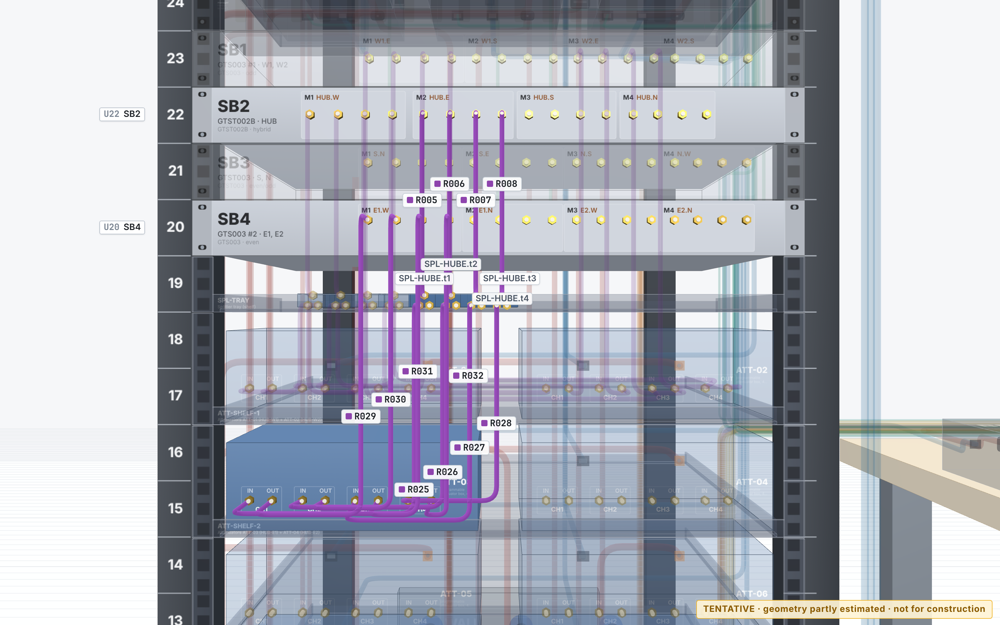
Tile mapping: tile i → ATT-03 channel i
From the A-side tile through the attenuator to the B-side tile; passive parts are named with the ports used. 3D close-up: poc1_renders/link_HUB-E1.png (or search R005 in the twin and press "Trace signal").
| Tile | A side: tile, sector | A path | Attenuator | B path | B side: tile, sector |
|---|---|---|---|---|---|
| 1 | SB2.M2.T1 HUB.E | R005 → SPL-HUBE.t1 (P1→S) → R025 | ATT-03 CH1 in→out | R029 | SB4.M1.T1 E1.W |
| 2 | SB2.M2.T2 HUB.E | R006 → SPL-HUBE.t2 (P1→S) → R026 | ATT-03 CH2 in→out | R030 | SB4.M1.T2 E1.W |
| 3 | SB2.M2.T3 HUB.E | R007 → SPL-HUBE.t3 (P1→S) → R027 | ATT-03 CH3 in→out | R031 | SB4.M1.T3 E1.W |
| 4 | SB2.M2.T4 HUB.E | R008 → SPL-HUBE.t4 (P1→S) → R028 | ATT-03 CH4 in→out | R032 | SB4.M1.T4 E1.W |
 A1A2A3A4B1B2B3B4
A1A2A3A4B1B2B3B4Connect these 12 cables
| ID | From | To | Part | Length · route mm | VLAN / note |
|---|---|---|---|---|---|
| R005 | SB2.M2.T1 | SPL-HUBE.t1.S | Mini-Circuits CBL-1FT-SMSM+ | 0.30 m · route 194 | HUB.E tile 1 to its splitter; span 3U, needs 0.23 m |
| R006 | SB2.M2.T2 | SPL-HUBE.t2.S | Mini-Circuits CBL-1FT-SMSM+ | 0.30 m · route 194 | HUB.E tile 2 to its splitter; span 3U, needs 0.23 m |
| R007 | SB2.M2.T3 | SPL-HUBE.t3.S | Mini-Circuits CBL-1FT-SMSM+ | 0.30 m · route 194 | HUB.E tile 3 to its splitter; span 3U, needs 0.23 m |
| R008 | SB2.M2.T4 | SPL-HUBE.t4.S | Mini-Circuits CBL-1FT-SMSM+ | 0.30 m · route 194 | HUB.E tile 4 to its splitter; span 3U, needs 0.23 m |
| R025 | SPL-HUBE.t1.P1 | ATT-03.ch1.in | Mini-Circuits CBL-2FT-SMSM+ | 0.61 m · route 412 | HUB-E1 tile 1; span 3U, needs 0.35 m |
| R026 | SPL-HUBE.t2.P1 | ATT-03.ch2.in | Mini-Circuits CBL-2FT-SMSM+ | 0.61 m · route 390 | HUB-E1 tile 2; span 3U, needs 0.35 m |
| R027 | SPL-HUBE.t3.P1 | ATT-03.ch3.in | Mini-Circuits CBL-2FT-SMSM+ | 0.61 m · route 368 | HUB-E1 tile 3; span 3U, needs 0.35 m |
| R028 | SPL-HUBE.t4.P1 | ATT-03.ch4.in | Mini-Circuits CBL-2FT-SMSM+ | 0.61 m · route 346 | HUB-E1 tile 4; span 3U, needs 0.35 m |
| R029 | SB4.M1.T1 | ATT-03.ch1.out | Mini-Circuits CBL-2FT-SMSM+ | 0.61 m · route 417 | HUB-E1 E1.W tile 1; span 4U, needs 0.39 m |
| R030 | SB4.M1.T2 | ATT-03.ch2.out | Mini-Circuits CBL-2FT-SMSM+ | 0.61 m · route 397 | HUB-E1 E1.W tile 2; span 4U, needs 0.39 m |
| R031 | SB4.M1.T3 | ATT-03.ch3.out | Mini-Circuits CBL-2FT-SMSM+ | 0.61 m · route 375 | HUB-E1 E1.W tile 3; span 4U, needs 0.39 m |
| R032 | SB4.M1.T4 | ATT-03.ch4.out | Mini-Circuits CBL-2FT-SMSM+ | 0.61 m · route 354 | HUB-E1 E1.W tile 4; span 4U, needs 0.39 m |
IF link HUB-E2 (ATT-04)
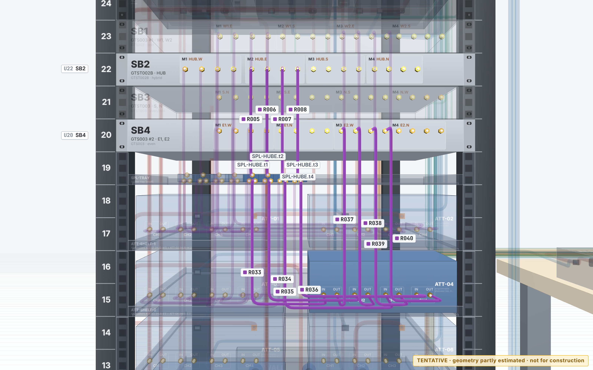
Tile mapping: tile i → ATT-04 channel i
From the A-side tile through the attenuator to the B-side tile; passive parts are named with the ports used. 3D close-up: poc1_renders/link_HUB-E2.png (or search R033 in the twin and press "Trace signal").
| Tile | A side: tile, sector | A path | Attenuator | B path | B side: tile, sector |
|---|---|---|---|---|---|
| 1 | SB2.M2.T1 HUB.E | R005 → SPL-HUBE.t1 (P2→S) → R033 | ATT-04 CH1 in→out | R037 | SB4.M3.T1 E2.W |
| 2 | SB2.M2.T2 HUB.E | R006 → SPL-HUBE.t2 (P2→S) → R034 | ATT-04 CH2 in→out | R038 | SB4.M3.T2 E2.W |
| 3 | SB2.M2.T3 HUB.E | R007 → SPL-HUBE.t3 (P2→S) → R035 | ATT-04 CH3 in→out | R039 | SB4.M3.T3 E2.W |
| 4 | SB2.M2.T4 HUB.E | R008 → SPL-HUBE.t4 (P2→S) → R036 | ATT-04 CH4 in→out | R040 | SB4.M3.T4 E2.W |
 A1A2A3A4B1B2B3B4
A1A2A3A4B1B2B3B4Connect these 8 cables
| ID | From | To | Part | Length · route mm | VLAN / note |
|---|---|---|---|---|---|
| R033 | SPL-HUBE.t1.P2 | ATT-04.ch1.in | Mini-Circuits CBL-2FT-SMSM+ | 0.61 m · route 388 | HUB-E2 tile 1; span 3U, needs 0.47 m |
| R034 | SPL-HUBE.t2.P2 | ATT-04.ch2.in | Mini-Circuits CBL-2FT-SMSM+ | 0.61 m · route 410 | HUB-E2 tile 2; span 3U, needs 0.47 m |
| R035 | SPL-HUBE.t3.P2 | ATT-04.ch3.in | Mini-Circuits CBL-2FT-SMSM+ | 0.61 m · route 432 | HUB-E2 tile 3; span 3U, needs 0.47 m |
| R036 | SPL-HUBE.t4.P2 | ATT-04.ch4.in | Mini-Circuits CBL-2FT-SMSM+ | 0.61 m · route 454 | HUB-E2 tile 4; span 3U, needs 0.47 m |
| R037 | SB4.M3.T1 | ATT-04.ch1.out | Mini-Circuits CBL-2FT-SMSM+ | 0.61 m · route 364 | HUB-E2 E2.W tile 1; span 4U, needs 0.44 m |
| R038 | SB4.M3.T2 | ATT-04.ch2.out | Mini-Circuits CBL-2FT-SMSM+ | 0.61 m · route 377 | HUB-E2 E2.W tile 2; span 4U, needs 0.44 m |
| R039 | SB4.M3.T3 | ATT-04.ch3.out | Mini-Circuits CBL-2FT-SMSM+ | 0.61 m · route 399 | HUB-E2 E2.W tile 3; span 4U, needs 0.44 m |
| R040 | SB4.M3.T4 | ATT-04.ch4.out | Mini-Circuits CBL-2FT-SMSM+ | 0.61 m · route 422 | HUB-E2 E2.W tile 4; span 4U, needs 0.44 m |
Cables R005, R006, R007, R008 belong to this link too but are listed in step 21 (fitted once, shared through the splitter).
IF link HUB-S (ATT-05)

Tile mapping: tile i → ATT-05 channel i
From the A-side tile through the attenuator to the B-side tile; passive parts are named with the ports used. 3D close-up: poc1_renders/link_HUB-S.png (or search R041 in the twin and press "Trace signal").
| Tile | A side: tile, sector | A path | Attenuator | B path | B side: tile, sector |
|---|---|---|---|---|---|
| 1 | SB2.M3.T1 HUB.S | R041 | ATT-05 CH1 in→out | R045 | SB3.M1.T1 S.N |
| 2 | SB2.M3.T2 HUB.S | R042 | ATT-05 CH2 in→out | R046 | SB3.M1.T2 S.N |
| 3 | SB2.M3.T3 HUB.S | R043 | ATT-05 CH3 in→out | R047 | SB3.M1.T3 S.N |
| 4 | SB2.M3.T4 HUB.S | R044 | ATT-05 CH4 in→out | R048 | SB3.M1.T4 S.N |
 A1A2A3A4B1B2B3B4
A1A2A3A4B1B2B3B4Connect these 8 cables
| ID | From | To | Part | Length · route mm | VLAN / note |
|---|---|---|---|---|---|
| R041 | SB2.M3.T1 | ATT-05.ch1.in | Mini-Circuits CBL-3FT-SMSM+ | 0.91 m · route 761 | HUB-S HUB.S tile 1; span 8U, needs 0.67 m |
| R042 | SB2.M3.T2 | ATT-05.ch2.in | Mini-Circuits CBL-3FT-SMSM+ | 0.91 m · route 739 | HUB-S HUB.S tile 2; span 8U, needs 0.67 m |
| R043 | SB2.M3.T3 | ATT-05.ch3.in | Mini-Circuits CBL-3FT-SMSM+ | 0.91 m · route 717 | HUB-S HUB.S tile 3; span 8U, needs 0.67 m |
| R044 | SB2.M3.T4 | ATT-05.ch4.in | Mini-Circuits CBL-3FT-SMSM+ | 0.91 m · route 695 | HUB-S HUB.S tile 4; span 8U, needs 0.67 m |
| R045 | SB3.M1.T1 | ATT-05.ch1.out | Mini-Circuits CBL-3FT-SMSM+ | 0.91 m · route 590 | HUB-S S.N tile 1; span 7U, needs 0.52 m |
| R046 | SB3.M1.T2 | ATT-05.ch2.out | Mini-Circuits CBL-3FT-SMSM+ | 0.91 m · route 570 | HUB-S S.N tile 2; span 7U, needs 0.52 m |
| R047 | SB3.M1.T3 | ATT-05.ch3.out | Mini-Circuits CBL-3FT-SMSM+ | 0.91 m · route 548 | HUB-S S.N tile 3; span 7U, needs 0.52 m |
| R048 | SB3.M1.T4 | ATT-05.ch4.out | Mini-Circuits CBL-3FT-SMSM+ | 0.91 m · route 527 | HUB-S S.N tile 4; span 7U, needs 0.52 m |
IF link HUB-N (ATT-06)
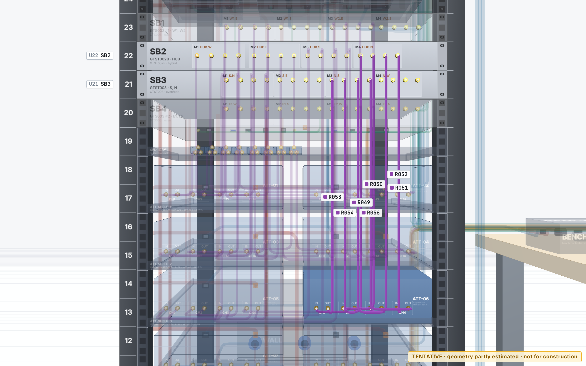
Tile mapping: tile i → ATT-06 channel i
From the A-side tile through the attenuator to the B-side tile; passive parts are named with the ports used. 3D close-up: poc1_renders/link_HUB-N.png (or search R049 in the twin and press "Trace signal").
| Tile | A side: tile, sector | A path | Attenuator | B path | B side: tile, sector |
|---|---|---|---|---|---|
| 1 | SB2.M4.T1 HUB.N | R049 | ATT-06 CH1 in→out | R053 | SB3.M3.T1 N.S |
| 2 | SB2.M4.T2 HUB.N | R050 | ATT-06 CH2 in→out | R054 | SB3.M3.T2 N.S |
| 3 | SB2.M4.T3 HUB.N | R051 | ATT-06 CH3 in→out | R055 | SB3.M3.T3 N.S |
| 4 | SB2.M4.T4 HUB.N | R052 | ATT-06 CH4 in→out | R056 | SB3.M3.T4 N.S |
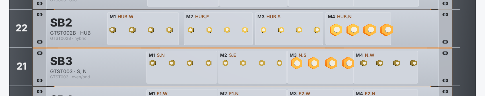
A1A2A3A4B1B2B3B4Connect these 8 cables
| ID | From | To | Part | Length · route mm | VLAN / note |
|---|---|---|---|---|---|
| R049 | SB2.M4.T1 | ATT-06.ch1.in | Mini-Circuits CBL-2FT-SMSM+ | 0.61 m · route 507 | HUB-N HUB.N tile 1; span 8U, needs 0.53 m |
| R050 | SB2.M4.T2 | ATT-06.ch2.in | Mini-Circuits CBL-2FT-SMSM+ | 0.61 m · route 484 | HUB-N HUB.N tile 2; span 8U, needs 0.53 m |
| R051 | SB2.M4.T3 | ATT-06.ch3.in | Mini-Circuits CBL-2FT-SMSM+ | 0.61 m · route 461 | HUB-N HUB.N tile 3; span 8U, needs 0.53 m |
| R052 | SB2.M4.T4 | ATT-06.ch4.in | Mini-Circuits CBL-2FT-SMSM+ | 0.61 m · route 442 | HUB-N HUB.N tile 4; span 8U, needs 0.53 m |
| R053 | SB3.M3.T1 | ATT-06.ch1.out | Mini-Circuits CBL-2FT-SMSM+ | 0.61 m · route 417 | HUB-N N.S tile 1; span 7U, needs 0.57 m |
| R054 | SB3.M3.T2 | ATT-06.ch2.out | Mini-Circuits CBL-2FT-SMSM+ | 0.61 m · route 430 | HUB-N N.S tile 2; span 7U, needs 0.57 m |
| R055 | SB3.M3.T3 | ATT-06.ch3.out | Mini-Circuits CBL-2FT-SMSM+ | 0.61 m · route 452 | HUB-N N.S tile 3; span 7U, needs 0.57 m |
| R056 | SB3.M3.T4 | ATT-06.ch4.out | Mini-Circuits CBL-2FT-SMSM+ | 0.61 m · route 475 | HUB-N N.S tile 4; span 7U, needs 0.57 m |
IF link E2-W2 (ATT-07)

Tile mapping: tile i → ATT-07 channel i
From the A-side tile through the attenuator to the B-side tile; passive parts are named with the ports used. 3D close-up: poc1_renders/link_E2-W2.png (or search R057 in the twin and press "Trace signal").
| Tile | A side: tile, sector | A path | Attenuator | B path | B side: tile, sector |
|---|---|---|---|---|---|
| 1 | SB4.M4.T1 E2.N | R057 | ATT-07 CH1 in→out | R061 | SB1.M4.T1 W2.S |
| 2 | SB4.M4.T2 E2.N | R058 | ATT-07 CH2 in→out | R062 | SB1.M4.T2 W2.S |
| 3 | SB4.M4.T3 E2.N | R059 | ATT-07 CH3 in→out | R063 | SB1.M4.T3 W2.S |
| 4 | SB4.M4.T4 E2.N | R060 | ATT-07 CH4 in→out | R064 | SB1.M4.T4 W2.S |
 A1A2A3A4B1B2B3B4
A1A2A3A4B1B2B3B4Connect these 8 cables
| ID | From | To | Part | Length · route mm | VLAN / note |
|---|---|---|---|---|---|
| R057 | SB4.M4.T1 | ATT-07.ch1.in | Mini-Circuits CBL-3FT-SMSM+ | 0.91 m · route 801 | E2-W2 E2.N tile 1; span 8U, needs 0.76 m |
| R058 | SB4.M4.T2 | ATT-07.ch2.in | Mini-Circuits CBL-3FT-SMSM+ | 0.91 m · route 777 | E2-W2 E2.N tile 2; span 8U, needs 0.76 m |
| R059 | SB4.M4.T3 | ATT-07.ch3.in | Mini-Circuits CBL-3FT-SMSM+ | 0.91 m · route 754 | E2-W2 E2.N tile 3; span 8U, needs 0.76 m |
| R060 | SB4.M4.T4 | ATT-07.ch4.in | Mini-Circuits CBL-3FT-SMSM+ | 0.91 m · route 731 | E2-W2 E2.N tile 4; span 8U, needs 0.76 m |
| R061 | SB1.M4.T1 | ATT-07.ch1.out | Mini-Circuits CBL-1M-SMSM+ | 1.00 m · route 918 | E2-W2 W2.S tile 1; span 11U, needs 0.88 m |
| R062 | SB1.M4.T2 | ATT-07.ch2.out | Mini-Circuits CBL-1M-SMSM+ | 1.00 m · route 896 | E2-W2 W2.S tile 2; span 11U, needs 0.88 m |
| R063 | SB1.M4.T3 | ATT-07.ch3.out | Mini-Circuits CBL-1M-SMSM+ | 1.00 m · route 872 | E2-W2 W2.S tile 3; span 11U, needs 0.88 m |
| R064 | SB1.M4.T4 | ATT-07.ch4.out | Mini-Circuits CBL-1M-SMSM+ | 1.00 m · route 849 | E2-W2 W2.S tile 4; span 11U, needs 0.88 m |
IF link E1-N (ATT-08)

Tile mapping: tile i → ATT-08 channel i
From the A-side tile through the attenuator to the B-side tile; passive parts are named with the ports used. 3D close-up: poc1_renders/link_E1-N.png (or search R065 in the twin and press "Trace signal").
| Tile | A side: tile, sector | A path | Attenuator | B path | B side: tile, sector |
|---|---|---|---|---|---|
| 1 | SB4.M2.T1 E1.N | R065 | ATT-08 CH1 in→out | R069 | SB3.M4.T1 N.W |
| 2 | SB4.M2.T2 E1.N | R066 | ATT-08 CH2 in→out | R070 | SB3.M4.T2 N.W |
| 3 | SB4.M2.T3 E1.N | R067 | ATT-08 CH3 in→out | R071 | SB3.M4.T3 N.W |
| 4 | SB4.M2.T4 E1.N | R068 | ATT-08 CH4 in→out | R072 | SB3.M4.T4 N.W |
 A1A2A3A4B1B2B3B4
A1A2A3A4B1B2B3B4Connect these 8 cables
| ID | From | To | Part | Length · route mm | VLAN / note |
|---|---|---|---|---|---|
| R065 | SB4.M2.T1 | ATT-08.ch1.in | Mini-Circuits CBL-3FT-SMSM+ | 0.91 m · route 544 | E1-N E1.N tile 1; span 8U, needs 0.69 m |
| R066 | SB4.M2.T2 | ATT-08.ch2.in | Mini-Circuits CBL-3FT-SMSM+ | 0.91 m · route 566 | E1-N E1.N tile 2; span 8U, needs 0.69 m |
| R067 | SB4.M2.T3 | ATT-08.ch3.in | Mini-Circuits CBL-3FT-SMSM+ | 0.91 m · route 587 | E1-N E1.N tile 3; span 8U, needs 0.69 m |
| R068 | SB4.M2.T4 | ATT-08.ch4.in | Mini-Circuits CBL-3FT-SMSM+ | 0.91 m · route 609 | E1-N E1.N tile 4; span 8U, needs 0.69 m |
| R069 | SB3.M4.T1 | ATT-08.ch1.out | Mini-Circuits CBL-3FT-SMSM+ | 0.91 m · route 622 | E1-N N.W tile 1; span 9U, needs 0.56 m |
| R070 | SB3.M4.T2 | ATT-08.ch2.out | Mini-Circuits CBL-3FT-SMSM+ | 0.91 m · route 598 | E1-N N.W tile 2; span 9U, needs 0.56 m |
| R071 | SB3.M4.T3 | ATT-08.ch3.out | Mini-Circuits CBL-3FT-SMSM+ | 0.91 m · route 575 | E1-N N.W tile 3; span 9U, needs 0.56 m |
| R072 | SB3.M4.T4 | ATT-08.ch4.out | Mini-Circuits CBL-3FT-SMSM+ | 0.91 m · route 552 | E1-N N.W tile 4; span 9U, needs 0.56 m |
IF link W1-S (ATT-09)

Tile mapping: tile i → ATT-09 channel i
From the A-side tile through the attenuator to the B-side tile; passive parts are named with the ports used. 3D close-up: poc1_renders/link_W1-S.png (or search R073 in the twin and press "Trace signal").
| Tile | A side: tile, sector | A path | Attenuator | B path | B side: tile, sector |
|---|---|---|---|---|---|
| 1 | SB1.M2.T1 W1.S | R073 | ATT-09 CH1 in→out | R077 | SB3.M2.T1 S.E |
| 2 | SB1.M2.T2 W1.S | R074 | ATT-09 CH2 in→out | R078 | SB3.M2.T2 S.E |
| 3 | SB1.M2.T3 W1.S | R075 | ATT-09 CH3 in→out | R079 | SB3.M2.T3 S.E |
| 4 | SB1.M2.T4 W1.S | R076 | ATT-09 CH4 in→out | R080 | SB3.M2.T4 S.E |
 A1A2A3A4B1B2B3B4
A1A2A3A4B1B2B3B4Connect these 8 cables
| ID | From | To | Part | Length · route mm | VLAN / note |
|---|---|---|---|---|---|
| R073 | SB1.M2.T1 | ATT-09.ch1.in | Mini-Circuits CBL-1M-SMSM+ | 1.00 m · route 901 | W1-S W1.S tile 1; span 13U, needs 0.79 m |
| R074 | SB1.M2.T2 | ATT-09.ch2.in | Mini-Circuits CBL-1M-SMSM+ | 1.00 m · route 879 | W1-S W1.S tile 2; span 13U, needs 0.79 m |
| R075 | SB1.M2.T3 | ATT-09.ch3.in | Mini-Circuits CBL-1M-SMSM+ | 1.00 m · route 857 | W1-S W1.S tile 3; span 13U, needs 0.79 m |
| R076 | SB1.M2.T4 | ATT-09.ch4.in | Mini-Circuits CBL-1M-SMSM+ | 1.00 m · route 835 | W1-S W1.S tile 4; span 13U, needs 0.79 m |
| R077 | SB3.M2.T1 | ATT-09.ch1.out | Mini-Circuits CBL-3FT-SMSM+ | 0.91 m · route 810 | W1-S S.E tile 1; span 11U, needs 0.69 m |
| R078 | SB3.M2.T2 | ATT-09.ch2.out | Mini-Circuits CBL-3FT-SMSM+ | 0.91 m · route 788 | W1-S S.E tile 2; span 11U, needs 0.69 m |
| R079 | SB3.M2.T3 | ATT-09.ch3.out | Mini-Circuits CBL-3FT-SMSM+ | 0.91 m · route 767 | W1-S S.E tile 3; span 11U, needs 0.69 m |
| R080 | SB3.M2.T4 | ATT-09.ch4.out | Mini-Circuits CBL-3FT-SMSM+ | 0.91 m · route 745 | W1-S S.E tile 4; span 11U, needs 0.69 m |
IP-50 conducted chains

Chains: radio → transition → MWATT channel → transition → radio
| Hop | Radio A | A path | Attenuator | B path | Radio B |
|---|---|---|---|---|---|
| W1-CORE | IP50-W1-CORE@W1.wg | W001 → WGT-W1-CORE-A → W002 | MWATT CH1 | W003 → WGT-W1-CORE-B → W004 | IP50-W1-CORE@CORE.wg |
| CORE-E1 | IP50-CORE-E1@CORE.wg | W005 → WGT-CORE-E1-A → W006 | MWATT CH2 | W007 → WGT-CORE-E1-B → W008 | IP50-CORE-E1@E1.wg |
| W1-W2 | IP50-W1-W2@W1.wg | W009 → WGT-W1-W2-A → W010 | MWATT CH3 | W011 → WGT-W1-W2-B → W012 | IP50-W1-W2@W2.wg |
| E1-E2 | IP50-E1-E2@E1.wg | W013 → WGT-E1-E2-A → W014 | MWATT CH4 | W015 → WGT-E1-E2-B → W016 | IP50-E1-E2@E2.wg |
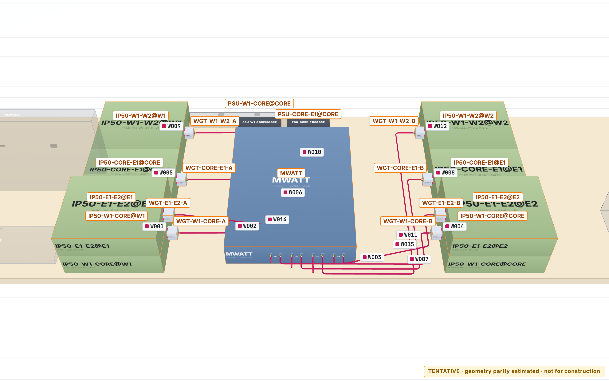
Connect these 16 cables
| ID | From | To | Part | Length · route mm | VLAN / note |
|---|---|---|---|---|---|
| W001 | IP50-W1-CORE@W1.wg | WGT-W1-CORE-A.wg | waveguide-to-coax transition PEWCA1003 (band TBC) | flange · route 100 | hop W1-CORE |
| W002 | WGT-W1-CORE-A.coax | MWATT.ch1.in | SA18S10W-30 pad on the transition, then Mini-Circuits CBL-2FT-SMSM+ | 0.61 m · route 470 | hop W1-CORE |
| W003 | MWATT.ch1.out | WGT-W1-CORE-B.coax | Mini-Circuits CBL-3FT-SMSM+, then SA18S10W-30 pad on the transition | 0.91 m · route 667 | hop W1-CORE |
| W004 | WGT-W1-CORE-B.wg | IP50-W1-CORE@CORE.wg | waveguide-to-coax transition PEWCA1003 (band TBC) | flange · route 160 | hop W1-CORE |
| W005 | IP50-CORE-E1@CORE.wg | WGT-CORE-E1-A.wg | waveguide-to-coax transition PEWCA1003 (band TBC) | flange · route 180 | hop CORE-E1 |
| W006 | WGT-CORE-E1-A.coax | MWATT.ch2.in | SA18S10W-30 pad on the transition, then Mini-Circuits CBL-3FT-SMSM+ | 0.91 m · route 828 | hop CORE-E1 |
| W007 | MWATT.ch2.out | WGT-CORE-E1-B.coax | Mini-Circuits CBL-1M-SMSM+, then SA18S10W-30 pad on the transition | 1 m · route 889 | hop CORE-E1 |
| W008 | WGT-CORE-E1-B.wg | IP50-CORE-E1@E1.wg | waveguide-to-coax transition PEWCA1003 (band TBC) | flange · route 240 | hop CORE-E1 |
| W009 | IP50-W1-W2@W1.wg | WGT-W1-W2-A.wg | waveguide-to-coax transition PEWCA1003 (band TBC) | flange · route 260 | hop W1-W2 |
| W010 | WGT-W1-W2-A.coax | MWATT.ch3.in | SA18S10W-30 pad on the transition, then Mini-Circuits CBL-2M-SMSM+ | 2.00 m · route 1186 | hop W1-W2 |
| W011 | MWATT.ch3.out | WGT-W1-W2-B.coax | Mini-Circuits CBL-2M-SMSM+, then SA18S10W-30 pad on the transition | 2.00 m · route 1111 | hop W1-W2 |
| W012 | WGT-W1-W2-B.wg | IP50-W1-W2@W2.wg | waveguide-to-coax transition PEWCA1003 (band TBC) | flange · route 320 | hop W1-W2 |
| W013 | IP50-E1-E2@E1.wg | WGT-E1-E2-A.wg | waveguide-to-coax transition PEWCA1003 (band TBC) | flange · route 100 | hop E1-E2 |
| W014 | WGT-E1-E2-A.coax | MWATT.ch4.in | SA18S10W-30 pad on the transition, then Mini-Circuits CBL-3FT-SMSM+ | 0.91 m · route 682 | hop E1-E2 |
| W015 | MWATT.ch4.out | WGT-E1-E2-B.coax | Mini-Circuits CBL-2FT-SMSM+, then SA18S10W-30 pad on the transition | 0.61 m · route 478 | hop E1-E2 |
| W016 | WGT-E1-E2-B.wg | IP50-E1-E2@E2.wg | waveguide-to-coax transition PEWCA1003 (band TBC) | flange · route 160 | hop E1-E2 |
Checks and power-up
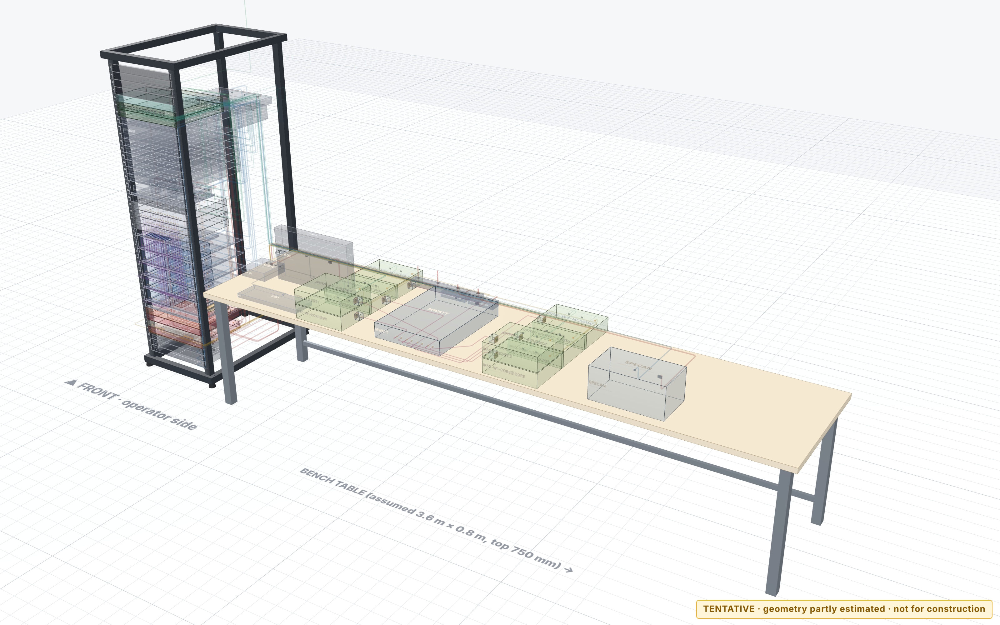
The install checks, the power-up order and the event procedure are in section 6.
5 Port maps

SW-DATA port plan
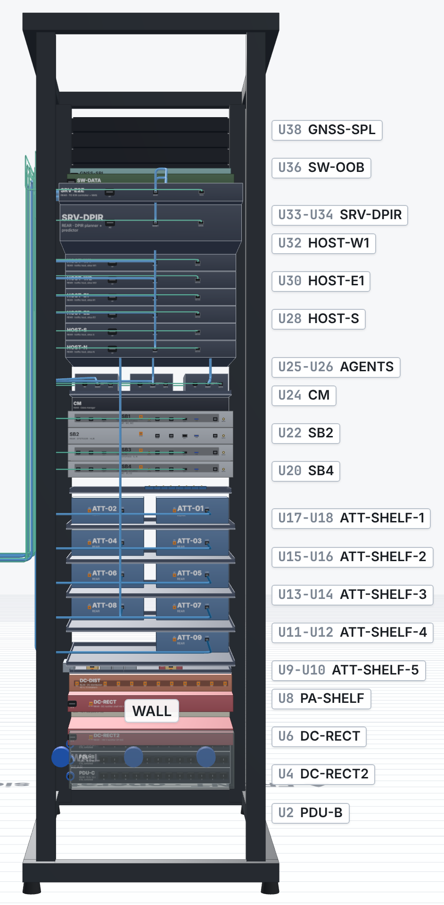
SW-DATA · Netgear M4350-24F4V · U37. Netgear M4350-24F4V 440 x 43.2 x 400 mm; ports on the front
| Port | Cage | VLAN | Site | Endpoint | Cable |
|---|---|---|---|---|---|
| P1 | SFP+ (1/10G) | 101 | W1 | AGENT-W1.data | F001 (1G) |
| P2 | SFP+ (1/10G) | 102 | W2 | AGENT-W2.data | F002 (1G) |
| P3 | SFP+ (1/10G) | 104 | E1 | AGENT-E1.data | F003 (1G) |
| P4 | SFP+ (1/10G) | 105 | E2 | AGENT-E2.data | F004 (1G) |
| P5 | SFP+ (1/10G) | 106 | S | AGENT-S.data | F005 (1G) |
| P6 | SFP+ (1/10G) | 107 | N | AGENT-N.data | F006 (1G) |
| P7 | SFP+ (1/10G) | 101 | W1 | SB1.W1.SFP+ | F007 (10G) |
| P8 | SFP+ (1/10G) | 101 | W1 | IP50-W1-CORE@W1.data | F008 (10G) |
| P9 | SFP+ (1/10G) | 101 | W1 | IP50-W1-W2@W1.data | F009 (10G) |
| P10 | SFP+ (1/10G) | 101 | W1 | HOST-W1.nic10g | F010 (10G) |
| P11 | SFP+ (1/10G) | 102 | W2 | SB1.W2.SFP+ | F011 (10G) |
| P12 | SFP+ (1/10G) | 102 | W2 | IP50-W1-W2@W2.data | F012 (10G) |
| P13 | SFP+ (1/10G) | 102 | W2 | HOST-W2.nic10g | F013 (10G) |
| P14 | SFP+ (1/10G) | 103 | CORE | IP50-W1-CORE@CORE.data | F014 (10G) |
| P15 | SFP+ (1/10G) | 103 | CORE | IP50-CORE-E1@CORE.data | F015 (10G) |
| P16 | SFP+ (1/10G) | 103 | CORE | SRV-E2E.data | F016 (10G) |
| P17 | SFP+ (10G) | 103 | CORE | SRV-DPIR.data | F017 (10G) |
| P18 | SFP+ (10G) | 104 | E1 | SB4.E1.SFP+ | F018 (10G) |
| P19 | SFP+ (10G) | 104 | E1 | IP50-CORE-E1@E1.data | F019 (10G) |
| P20 | SFP+ (10G) | 104 | E1 | IP50-E1-E2@E1.data | F020 (10G) |
| P21 | SFP+ (10G) | 104 | E1 | HOST-E1.nic10g | F021 (10G) |
| P22 | SFP+ (10G) | 105 | E2 | SB4.E2.SFP+ | F022 (10G) |
| P23 | SFP+ (10G) | 105 | E2 | IP50-E1-E2@E2.data | F023 (10G) |
| P24 | SFP+ (10G) | 105 | E2 | HOST-E2.nic10g | F024 (10G) |
| P25 | SFP28 (10G mode) | 106 | S | SB3.S.SFP+ | F025 (10G) |
| P26 | SFP28 (10G mode) | 106 | S | HOST-S.nic10g | F026 (10G) |
| P27 | SFP28 (10G mode) | 107 | N | SB3.N.SFP+ | F027 (10G) |
| P28 | SFP28 (10G mode) | 107 | N | HOST-N.nic10g | F028 (10G) |
SW-OOB port plan
SW-OOB · Netgear M4250-26G4XF-PoE+ (GSM4230PX) · U36. Netgear GSM4230PX 440 x 43.2 x 400 mm; all ports on Netgear's 'back' face, mounted facing the rack rear
| Port | Cage | Endpoint | Cable |
|---|---|---|---|
| P1 | RJ-45 | AGENT-W1.mgmt | E001 |
| P2 | RJ-45 | HOST-W1.mgmt | E002 |
| P3 | RJ-45 | AGENT-W2.mgmt | E003 |
| P4 | RJ-45 | HOST-W2.mgmt | E004 |
| P5 | RJ-45 | AGENT-E1.mgmt | E005 |
| P6 | RJ-45 | HOST-E1.mgmt | E006 |
| P7 | RJ-45 | AGENT-E2.mgmt | E007 |
| P8 | RJ-45 | HOST-E2.mgmt | E008 |
| P9 | RJ-45 | AGENT-S.mgmt | E009 |
| P10 | RJ-45 | HOST-S.mgmt | E010 |
| P11 | RJ-45 | AGENT-N.mgmt | E011 |
| P12 | RJ-45 | HOST-N.mgmt | E012 |
| P13 | RJ-45 | SRV-E2E.mgmt | E013 |
| P14 | RJ-45 | SRV-DPIR.mgmt | E014 |
| P15 | RJ-45 | BENCH-CTL.mgmt | E015 |
| P16 | RJ-45 | ATT-01.lan | E016 |
| P17 | RJ-45 | ATT-02.lan | E017 |
| P18 | RJ-45 | ATT-03.lan | E018 |
| P19 | RJ-45 | ATT-04.lan | E019 |
| P20 | RJ-45 | ATT-05.lan | E020 |
| P21 | RJ-45 | ATT-06.lan | E021 |
| P22 | RJ-45 | ATT-07.lan | E022 |
| P23 | RJ-45 | ATT-08.lan | E023 |
| P24 | RJ-45 | ATT-09.lan | E024 |
| P25 | RJ-45 | MWATT.lan | E025 |
| P26 | RJ-45 | PDU-A.net | E026 |
| P27 | SFP+ + AGM734 | PDU-B.net | E027 |
| P28 | SFP+ + AGM734 | PDU-C.net | E028 |
| P29 | SFP+ + AGM734 | SPECAN.lan | E029 |
PDU outlet map
Outlet → device → cable. Outlets marked OFF at t0 are switched off by the bench controller at the event; keep them on the switched PDU.
PDU-A U3
Raritan PX3-5260R class (1U, 12 x C13, switched, 16 A); fed by A001 from WALL.S1
| Outlet | Feeds | Cable | Lead |
|---|---|---|---|
| O1 | DC-RECT | A004 | 1.83 m |
| O2 | DC-RECT2 | A005 | 1.83 m |
| O3 | SW-DATA | A006 | 3.05 m |
| O4 | SW-OOB | A007 | 3.05 m |
| O5 | GNSS-SPL | A008 | 3.05 m |
| O6 | ATT-01 | A009 | 1.83 m |
| O7 | ATT-02 | A010 | 1.83 m |
| O8 | ATT-03 | A011 | 1.83 m |
| O9 | ATT-04 | A012 | 1.83 m |
| O10 | ATT-05 | A013 | 1.83 m |
| O11 | ATT-06 | A014 | 1.83 m |
| O12 | ATT-07 | A015 | 1.83 m |
PDU-B U2
Raritan PX3-5260R class (1U, 12 x C13, switched, 16 A); fed by A002 from WALL.S2
| Outlet | Feeds | Cable | Lead |
|---|---|---|---|
| O1 | ATT-08 | A016 | 1.83 m |
| O2 | ATT-09 | A017 | 1.83 m |
| O3 | AGENT-W1 | A018 | 1.83 m |
| O4 | AGENT-W2 | A019 | 3.05 m |
| O5 | AGENT-E1 | A020 | 3.05 m |
| O6 | AGENT-E2 | A021 | 1.83 m |
| O7 | AGENT-S | A022 | 1.83 m |
| O8 | AGENT-N | A023 | 3.05 m |
| O9 | HOST-W1 | A024 | 3.05 m |
| O10 | HOST-W2 | A025 | 3.05 m |
| O11 | HOST-E1 | A026 | 1.83 m |
| O12 | HOST-E2 | A027 | 1.83 m |
PDU-C U1
Raritan PX3-5260R class (1U, 12 x C13, switched, 16 A); fed by A003 from WALL.S3
| Outlet | Feeds | Cable | Lead |
|---|---|---|---|
| O1 | HOST-S | A028 | 3.05 m |
| O2 | HOST-N | A029 | 3.05 m |
| O3 | SRV-E2E OFF at t0 | A030 | 4.57 m |
| O4 | SRV-DPIR OFF at t0 | A031 | 3.05 m |
| O5 | INJ-HUB OFF at t0 | A032 | 1.83 m |
| O6 | PSU-W1-CORE@CORE OFF at t0 | A033 | 4.57 m |
| O7 | PSU-CORE-E1@CORE OFF at t0 | A034 | 4.57 m |
| O8 | spare | ||
| O9 | spare | ||
| O10 | spare | ||
| O11 | spare | ||
| O12 | spare |
TABLE-STRIP table
bench mains strip, C13;
| Outlet | Feeds | Cable | Lead |
|---|---|---|---|
| O1 | BENCH-CTL | A035 | 1.83 m |
| O2 | MONITOR | A036 | 1.83 m |
| O3 | SPECAN | A037 | 3.05 m |
| O4 | MWATT | A038 | 1.83 m |
DC breaker and fuse map
Each breaker / fuse position, the cable on it, and what that feeds next (adaptor → node ETH1, or the radio). Spare positions stay OFF. Switch breakers on one by one at power-up.
DC-DIST U7 · Eaton DCD1M
| Position | Feeds | Cable | Then | Note |
|---|---|---|---|---|
| CB1 | PA-01.dc | D002 0.5 m (cut) | P001 → SB1.W1.ETH1 | feeds node W1 |
| CB2 | PA-02.dc | D003 0.75 m (cut) | P002 → SB1.W2.ETH1 | feeds node W2 |
| CB3 | PA-03.dc | D004 0.25 m (cut) | P004 → SB3.S.ETH1 | feeds node S |
| CB4 | PA-04.dc | D005 0.5 m (cut) | P005 → SB3.N.ETH1 | feeds node N |
| CB5 | PA-05.dc | D006 0.25 m (cut) | P006 → SB4.E1.ETH1 | feeds node E1 |
| CB6 | PA-06.dc | D007 0.5 m (cut) | P007 → SB4.E2.ETH1 | feeds node E2 |
| CB7 | spare (OFF) | |||
| CB8 | spare (OFF) | |||
| CB9 | spare (OFF) | |||
| CB10 | spare (OFF) | |||
| bus | DC-RECT.bus | D001 0.25 m (cut) | 48 V bus |
DC-RECT U6 · Mean Well RCP-1UI + 2 x RCP-1000-48
| Position | Feeds | Cable | Then | Note |
|---|---|---|---|---|
| bus | DC-DIST.bus | D001 0.25 m (cut) | DC out; 48 V bus |
DC-DIST2 U5 · Westell N250110-N-0803, GMT fuses
| Position | Feeds | Cable | Then | Note |
|---|---|---|---|---|
| F1 | IP50-W1-CORE@W1.dc | D009 3.75 m (cut) | F1 output (bus A); -48 V through a GMT fuse | |
| F2 | IP50-CORE-E1@E1.dc | D012 4.75 m (cut) | F2 output (bus A); -48 V through a GMT fuse | |
| F3 | IP50-W1-W2@W1.dc | D013 3.25 m (cut) | F3 output (bus A); -48 V through a GMT fuse | |
| F4 | IP50-W1-W2@W2.dc | D014 4.5 m (cut) | F4 output (bus A); -48 V through a GMT fuse | |
| F5 | IP50-E1-E2@E1.dc | D015 3.75 m (cut) | F5 output (bus A); -48 V through a GMT fuse | |
| F6 | IP50-E1-E2@E2.dc | D016 4.75 m (cut) | F6 output (bus B); -48 V through a GMT fuse | |
| F7 | spare (OFF) | F7 output (bus B) | ||
| F8 | spare (OFF) | F8 output (bus B) | ||
| F9 | spare (OFF) | F9 output (bus B) | ||
| F10 | spare (OFF) | F10 output (bus B) | ||
| bus | DC-RECT2.out | D008 1.5 m (cut) | bus A input studs (B strapped); -48 V bus, positive grounded |
DC-RECT2 U4 · RCP-1UI + RCP-1000-48, wired -48 V
| Position | Feeds | Cable | Then | Note |
|---|---|---|---|---|
| out | DC-DIST2.bus | D008 1.5 m (cut) | DC out; -48 V bus, positive grounded |
PSU-W1-CORE@CORE table · 48 V supply, switched at t0
| Position | Feeds | Cable | Then | Note |
|---|---|---|---|---|
| out | IP50-W1-CORE@CORE.dc | D010 1.75 m (cut) | -48 V (positive grounded) from its own supply, switched off at t0 |
PSU-CORE-E1@CORE table · 48 V supply, switched at t0
| Position | Feeds | Cable | Then | Note |
|---|---|---|---|---|
| out | IP50-CORE-E1@CORE.dc | D011 1.25 m (cut) | -48 V (positive grounded) from its own supply, switched off at t0 |
6 Install checks and power-up
Model checks (from the twin)
| Model check | Result | Detail |
|---|---|---|
| Every port carries at most one cable | PASS | 448 ports used |
| Every cable reaches along its route | PASS | 212 cables with a length checked |
| IF cables not grossly over-length (slack loops) | PASS | 0 IF cables use under 35 % of their length (dress the slack in the cable manager) |
| Every rack device fits the rail depth | PASS | deepest 823 mm of 900 mm |
| No two devices share a rack unit | PASS | 38 U used of 42 |
| Spider SMA tile ports | PASS | 71 of 71 used; unused ones get ANNE-50+ loads |
Before power-up: installer checklist
- Every cable carries its ID tag at both ends.
- Every SMA torqued to 8 in-lb; no cable bent tighter than its minimum radius.
- Unused Spider tiles and coupler ports terminated (50-ohm loads).
- Every rack device on its U as in the front elevation; blanking panels in every empty U.
- DC polarity checked on every breaker and fuse output before any node or radio is connected (meter).
- PDUs, breakers and fuses OFF; PDU cords not yet in the wall.
- Every attenuator set to its start value (bench controller) before any radio is powered.
Power-up order
From the last step: “Run the install checks (this guide's last section), then power up: PDUs, DC drawers (breakers one by one), switches, nodes, radios.”
- PDUs: plug the PDU cords into the wall: A001 (PDU-A → WALL.S1), A002 (PDU-B → WALL.S2), A003 (PDU-C → WALL.S3) (PDU-A, PDU-B, PDU-C)
- DC drawers (breakers one by one): rectifiers on; then breakers / fuses one at a time, checking each load (DC-DIST, DC-RECT, DC-DIST2, DC-RECT2)
- switches: wait for the switches to boot before the nodes (SW-DATA, SW-OOB)
- nodes: nodes come up as their breakers / injector feed them (SB1, SB2, SB3, SB4)
- radios: only after every MWATT channel is set (IP50-W1-CORE@W1, IP50-W1-CORE@CORE, IP50-CORE-E1@CORE, IP50-CORE-E1@E1, IP50-W1-W2@W1, IP50-W1-W2@W2, IP50-E1-E2@E1, IP50-E1-E2@E2)
Model warnings: parts whose boxes intersect in the twin
The twin places these parts so that they overlap: they will not fit exactly as drawn. Set them out on site (stagger, space or restack them) and report the real positions so the twin can be corrected.
| Item | Intersects | Overlap x × y × z mm |
|---|---|---|
| SPL-HUBW.t1 | SPL-HUBW.t2 | 3 × 10 × 52 |
| SPL-HUBW.t2 | SPL-HUBW.t3 | 4 × 10 × 52 |
| SPL-HUBW.t3 | SPL-HUBW.t4 | 4 × 10 × 52 |
| SPL-HUBE.t1 | SPL-HUBE.t2 | 4 × 10 × 52 |
| SPL-HUBE.t2 | SPL-HUBE.t3 | 5 × 10 × 52 |
| SPL-HUBE.t3 | SPL-HUBE.t4 | 5 × 10 × 52 |
| PA-01 | PA-03 | 30 × 25 × 95 |
| PA-01 | PA-05 | 30 × 25 × 95 |
| PA-01 | INJ-HUB | 30 × 25 × 88 |
| PA-02 | PA-04 | 30 × 25 × 95 |
| PA-02 | PA-06 | 30 × 25 × 95 |
| PA-03 | PA-05 | 30 × 25 × 95 |
| Item | Intersects | Overlap x × y × z mm |
|---|---|---|
| PA-03 | INJ-HUB | 30 × 25 × 88 |
| PA-04 | PA-06 | 30 × 25 × 95 |
| PA-05 | INJ-HUB | 30 × 25 × 88 |
| MONITOR | IP50-CORE-E1@CORE | 80 × 86 × 60 |
| IP50-W1-CORE@W1 | IP50-CORE-E1@CORE | 322 × 86 × 20 |
| IP50-W1-CORE@CORE | IP50-CORE-E1@E1 | 322 × 86 × 20 |
| IP50-CORE-E1@CORE | IP50-W1-W2@W1 | 322 × 86 × 20 |
| IP50-CORE-E1@E1 | IP50-W1-W2@W2 | 322 × 86 × 20 |
| IP50-W1-W2@W1 | TABLE-STRIP | 42 × 44 × 44 |
| PSU-W1-CORE@CORE | TABLE-STRIP | 167 × 35 × 27 |
| PSU-CORE-E1@CORE | TABLE-STRIP | 55 × 35 × 27 |
Event procedure (t0)
Outlets to switch OFF at t0
| Switched device | What it is | PDU outlet | Also goes dark |
|---|---|---|---|
| SRV-E2E | TG E2E controller + NMS | PDU-C.O3 via A030 | itself |
| SRV-DPIR | DPIR planner + predictor | PDU-C.O4 via A031 | itself |
| INJ-HUB | PoE injector | PDU-C.O5 via A032 | SB2.HUB.ETH1 (P003) |
| PSU-W1-CORE@CORE | power supply | PDU-C.O6 via A033 | IP50-W1-CORE@CORE.dc (D010) |
| PSU-CORE-E1@CORE | power supply | PDU-C.O7 via A034 | IP50-CORE-E1@CORE.dc (D011) |
- Before t0: every link up, attenuators at their start values, logging running on BENCH-CTL.
- At t0: switch the outlets above OFF together from the bench controller (PDUs on SW-OOB). Do not touch any attenuator at t0.
- After the run: switch the same outlets ON again and let the nodes and radios re-join before the next run.

7 Assumptions and open questions
Assumptions in the twin (40)
- StarTech 4POSTRACK42 (rails adjustable 559-1016 mm, square holes, M6 cage nuts); rail-to-rail depth set to 900 mm so 800 mm-class rack servers fit
- U1 bottom 120 mm above the floor (on castors, estimate)
- one 3.6 m x 0.8 m bench table to the right of the rack, top at 750 mm (estimate)
- SRV-E2E, SRV-DPIR, HOST-W1, HOST-W2, HOST-E1, HOST-E2, HOST-S, HOST-N: lab rack server, stand-in Dell R260 (1U, 497 mm) / R660 (1U, 823 mm) / R760 (2U, 772 mm)
- SB1, SB2, SB3, SB4: Siklu 1U Spider box: brushed aluminium front, 16 SMA measured from lab photos (+/-8 mm); depth ~331 body / 345 overall and the rear panel (seen from inside one box) to confirm
- ATT-SHELF-1, ATT-SHELF-2, ATT-SHELF-3, ATT-SHELF-4, ATT-SHELF-5: 2U of rack space with a 1U vented shelf carrying two attenuator boxes
- DC-DIST: Eaton DCD1M (~280 mm): breakers front; load terminal face to confirm (rear assumed)
- PDU-A, PDU-B, PDU-C: 1U switched PDU, 12 x C13, 16 A (Raritan PX3-5260R class, 183 mm); outlets on the rear assumed
- BENCH-CTL: small form-factor PC
- MONITOR: 24-inch monitor on a stand
- KBD: keyboard + mouse
- IP50-W1-CORE@W1, IP50-W1-CORE@CORE, IP50-CORE-E1@CORE, IP50-CORE-E1@E1, IP50-W1-W2@W1, IP50-W1-W2@W2, IP50-E1-E2@E1, IP50-E1-E2@E2: Ceragon IP-50CX (about 6 kg; size estimate, ceragon.com not reachable) laid flat; waveguide flange on the side toward MWATT
- PSU-W1-CORE@CORE, PSU-CORE-E1@CORE: isolated 48 V 120 W desktop supply (e.g. Mean Well GST120A48)
- TABLE-STRIP: bench mains strip, C13 (part TBC)
- WALL: wall sockets behind the rack (estimate)
- GNSS-ANT: GNSS antenna lead enters above the rack (estimate)
Open questions for the lab (what would firm up the twin)
The twin is TENTATIVE. Answers already given (2026-11-24): attenuators are small 4-channel boxes with a dial; PDUs are 1U; a standard 42U rack; Ceragon IP-50CX radios; servers and hosts are 1U/2U rack servers with a PC and monitor on the table. What still moves cables and lengths, most important first:
- Spider boxes, rear panels (all four). One straight-on photo of each rear, from outside, with a tape along the bottom edge, and a close-up of the green terminal block. Only one box was seen, from inside: per node an SFP+ cage, two RJ-45 (which is ETH1?), a USB part and a GNSS SMA, plus one RJ-45 for the internal Raspberry Pi and one DC terminal block per box.
- Spider boxes, power. What goes into the terminal block (voltage, polarity, plug)? Is each node powered from it, or does each node still need PoE on ETH1? If the box has its own DC inlet, the ten DC/PoE adaptors, the breaker feeds and the PoE patch cords change.
- Spider boxes, front and identity. Which GTS003 serial is #1 (SF06000007 is assumed) and which tile SMA belongs to which module and node. Front SMA positions were measured from photos to about 8 mm.
- Internal Raspberry Pi. Does it need a LAN port and an IP on the management switch? (Up to 4 more SW-OOB ports; PoC 1 would then outgrow the GSM4230PX.)
- IP-50CX. Band (the 23 GHz version would need the 18-26.5 GHz attenuator chain instead of the J7204B), the waveguide or antenna interface, the DC connector, and the ports used (1G RJ-45, 10G SFP+, 25G SFP28).
- Where the bench table stands relative to the rack (side, gap, height) and where the wall sockets are. This sets every rack-to-table cable length.
- Switches as mounted. The GSM4230PX has all its ports on Netgear's 'back' face; the twin mounts it ports-to-the- rear. Confirm, and confirm the M4350 port numbering (odd ports top).
- DC drawer. Which face of the Eaton DCD1M carries the load terminals (sources disagree); the Westell -48 V panel has all terminals on the front.
- Attenuator boxes, when chosen. Make and model, SMA positions, IN/OUT labelling, power (brick or C14) and LAN.
- GTSTU022 / GTSTU023 (kit item 1): what they are and how many.